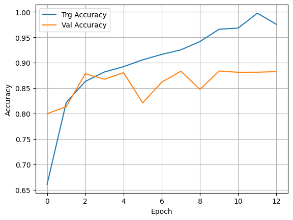
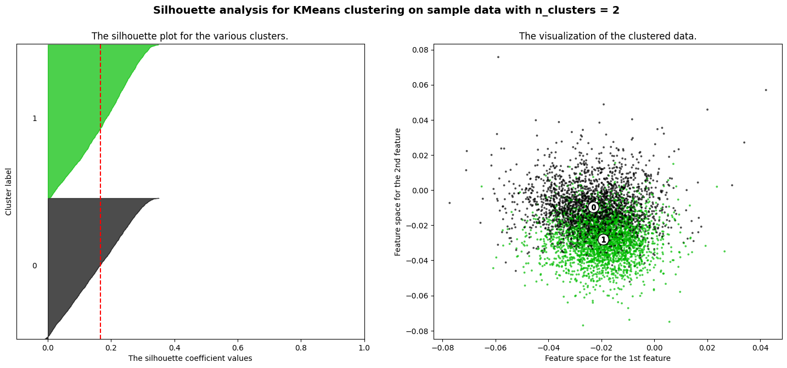

Text Analytics
Natural Language Processing is a vast subject requiring extensive study. The field is changing quickly, and advancements are being made at an extraordinary speed.
We will cover key concepts at a high level to get you started on a journey of exploration!
Some basic ideas
Text as data
Data often comes to us as text. It contains extremely useful information, and often what text can tell us, numerical quantities cannot. Yet we are challenged to effectively use text data in models, because models can only accept numbers as inputs.
Vectorizing text is the process of transforming text into numeric tensors.
In this discussion on text analytics, we will focus on transforming text into numbers, and using it for modeling.
The first challenge text poses is that it needs to be converted to numbers, ie vectorized, before any ML/AI can consume them.
One way to vectorize text is to use one-hot encoding.
Consider the word list below.
| index | word |
|---|---|
| 1 | [UNK] |
| 2 | i |
| 3 | love |
| 4 | this |
| 5 | and |
| 6 | company |
| 7 | living |
| 8 | brooklyn |
| 9 | new york |
| 10 | sports |
| 11 | politics |
| 12 | entertainment |
| 13 | in |
| 14 | theater |
| 15 | cinema |
| 16 | travel |
| 17 | we |
| 18 | tomorrow |
| 19 | believe |
| 20 | the |
Using the above, the word ‘company’ would be expressed as:
[0 0 0 0 0 0 1 0 0 0 0 0 0 0 0 0 0 0 0 0 0]
But how did we come up with this dictionary, and how would we encode an entire sentence?
Vectorizing Sentences as Sequences:
We build a dictionary of words from our corpus (corpus means a collection of documents), and call it the word index. We then use the word indexes to create a sequence vector by replacing each word in our given sentence by its corresponding word index number.
So "I love sports!" = [2, 3, 10] (Sentence 1)
And "I love living in Brooklyn and in New York and some sports" = [2, 3, 7, 13, 8, 5, 13, 9, 5, 1, 10] (Sentence 2)
Vectorizing with Document Term Matrices:**
This can be expressed as a matrix, with the word index numbers along one axis, and the 'documents' along the other. This is called a ‘Document Term Matrix’, for example, a document term matrix for our hypothetical sentences would look as below:
Now this matrix can be used as a numeric input into our modeling exercises.
Tokenization
Think about what we did:
- We ignored case
- We ignored punctuation
- We broke up our sentences into words. This is called tokenization. The words are our ‘tokens’
There are other ways to tokenize.
- We could have broken the sentence into characters.
- We could have used groups of 2 words as one token. So ‘I love sports’ would have the tokens ‘I love’ and ‘love sports’.
- We could have used 3 words as a token, so ‘I love living in Brooklyn’ would have the tokens ‘I love living’, ‘love living in’, and ‘living in Brooklyn’.
N-grams
Using multiple words as a token is called the n-gram approach, where n is the number of words.
- Unigram: When each word is considered a token (most common approach)
- Bigram: Two consecutive words taken together
- Trigram: Three consecutive words taken together
Bigrams, Trigrams etc help consider words together. When building the document term matrices, we ignored the word order, and treated each sentence as a set of words. This is called the ‘bag-of-words’ approach.
TF-IDF
TF-IDF = Term Frequency - Inverse Document Frequency
Generally when creating a Document Term Matrix, we would consider the count of times a word appears in a document.
However, not all words are equally important. Words that appear in all documents are likely less important than words that are unique to a single or a few documents.
Stopwords, such as of, and, the, is etc, would likely appear in all documents, and need to be weighted less.
TF-IDF is the product of term frequency, and the inverse of the document frequency (ie, the count of documents in which the word appears).
, where:
, the number of times a term appears in a document, and
where is the total number of documents in the document set, and is the number of documents in the document set that contain term Intuitively, the above will have the effect of reducing the impact of common words on our document term matrix
Source: https://scikit-learn.org/stable/modules/feature_extraction.html#text-feature-extraction
Summing it up
Machine learning models, including deep learning, can only process numeric vectors (tensors). Vectorizing text is the process of converting text into numeric tensors. Text vectorization processes come in many shapes and form, but they all follow the same template:
- First, you pre-process or standardize the text to make it easier to process, for instance by converting it to lowercase or removing punctuation.
- Then you split the text into units (called "tokens"), such as characters, words, or groups of words. This is called tokenization.
-
Finally, you convert each such token into a numerical vector. This almost always involves first indexing all tokens present in the data (the vocabulary, or the dictionary). You can do this:
-
using the bag-of-words approach we saw earlier (using a document-term-matrix), or
- using word embeddings that attempt to capture the semantic meaning of the text.
(Source: Adapted from Deep Learning with Python, François Chollet, Manning Publications)
Next, some library imports
import numpy as np
import matplotlib.pyplot as plt
import pandas as pd
import statsmodels.api as sm
import seaborn as sns
from sklearn.datasets import fetch_20newsgroups
from tensorflow.keras.preprocessing.text import Tokenizer
import tensorflow as tf
Text Pre-Processing
Common pre-processing tasks:
Stemming and lemmatization are rarely used anymore as transformers create tokens of sub-words that take care of thia automatically.
- Stop-word removal – Remove common words such as and, of, the, is etc.
- Lowercasing all text
- Removing punctuation
- Stemming – removing the ends of words as to end up with a common root
- Lemmatization – looking up words to their true root
Let us look at some Text Pre-Processing:
More library imports
import nltk
from nltk.tokenize import sent_tokenize, word_tokenize
from nltk.stem import PorterStemmer
from nltk.stem import WordNetLemmatizer
# Needed for NYU Jupyterhub
nltk.download('wordnet')
nltk.download('omw-1.4')
nltk.download('stopwords')
[nltk_data] Downloading package wordnet to
[nltk_data] C:\Users\user\AppData\Roaming\nltk_data...
[nltk_data] Package wordnet is already up-to-date!
[nltk_data] Downloading package omw-1.4 to
[nltk_data] C:\Users\user\AppData\Roaming\nltk_data...
[nltk_data] Package omw-1.4 is already up-to-date!
[nltk_data] Downloading package stopwords to
[nltk_data] C:\Users\user\AppData\Roaming\nltk_data...
[nltk_data] Package stopwords is already up-to-date!
True
sentence = "I love living in Brooklyn!!"
Remove punctuation
import string
string.punctuation
'!"#$%&\'()*+,-./:;<=>?@[\\]^_`{|}~'
for punctuation in string.punctuation:
sentence = sentence.replace(punctuation,"")
print(sentence)
I love living in Brooklyn
Convert to lowercase and remove stopwords
from nltk.corpus import stopwords
stopwords = set(stopwords.words('english'))
print(stopwords)
{'y', 'are', "wasn't", 'with', 'same', 'theirs', 'hasn', 'her', "shouldn't", 'don', 'have', 'why', 'your', 'doing', 'he', 'couldn', 'these', 'just', 'very', 'but', 'those', 'between', 'into', 'yours', 'under', 'above', 'was', 'were', 'his', 'whom', 'that', 'she', 'about', 'am', 'now', 'further', "aren't", 'has', 'where', 'more', 'does', 'at', 'down', 'doesn', "you're", 'the', 'because', 'isn', 'if', 'than', 'no', 'only', "isn't", 'not', 'while', 'our', 'd', 'having', 'here', 'needn', 'they', 'as', 'by', "you'll", 'what', 'up', 'haven', 'ourselves', 'again', 'before', 'weren', 'aren', 'a', "she's", 'this', 'been', 'should', "mightn't", 'him', 'didn', 'i', "you've", "needn't", 'once', 'is', 'there', 'shan', "wouldn't", "couldn't", 'over', 'mustn', "haven't", 's', 'most', 'wasn', 'such', 'hers', 'for', 'my', "shan't", 'do', "should've", 'm', 'hadn', 'which', 'herself', "hasn't", 'off', 'o', 'yourselves', 'when', 'mightn', 'how', 'during', "don't", 'it', 'we', 'other', 'after', 'through', 'of', 'any', 'so', "it's", 'in', 'won', 'myself', 'ain', 're', 'against', "didn't", 'll', 'ma', 'me', 'be', "won't", 'few', 'and', "that'll", 've', 'an', 'each', 'own', 'all', 'can', 'themselves', 'wouldn', 'then', 'out', 't', 'too', "mustn't", 'or', 'below', 'on', "hadn't", 'itself', 'their', 'its', 'shouldn', "you'd", 'you', 'ours', 'will', 'from', 'being', "weren't", 'who', 'to', 'both', 'did', 'some', 'had', 'nor', 'yourself', 'until', 'them', 'himself', "doesn't"}
print([i for i in sentence.lower().split() if i not in stopwords])
['love', 'living', 'brooklyn']
Code for Tokenizing and Creating Sequences with Tensorflow
from tensorflow.keras.preprocessing.text import Tokenizer
text = ["I love living in Brooklyn", "I am not sure if I enjoy politics"]
tokenizer = Tokenizer(oov_token='[UNK]', num_words=None)
tokenizer.fit_on_texts(text)
# This step transforms each text in texts to a sequence of integers.
# It takes each word in the text and replaces it with its corresponding integer value from the word_index dictionary.
seq = tokenizer.texts_to_sequences(['love I living Brooklyn in state']) # note 'state' is not in vocabulary
seq
[[3, 2, 4, 6, 5, 1]]
# The dictionary
tokenizer.word_index
{'[UNK]': 1,
'i': 2,
'love': 3,
'living': 4,
'in': 5,
'brooklyn': 6,
'am': 7,
'not': 8,
'sure': 9,
'if': 10,
'enjoy': 11,
'politics': 12}
Document Term Matrix - Counts
pd.DataFrame(tokenizer.texts_to_matrix(text, mode='count')[:,1:], columns = tokenizer.word_index.keys())
| [UNK] | i | love | living | in | brooklyn | am | not | sure | if | enjoy | politics | |
|---|---|---|---|---|---|---|---|---|---|---|---|---|
| 0 | 0.0 | 1.0 | 1.0 | 1.0 | 1.0 | 1.0 | 0.0 | 0.0 | 0.0 | 0.0 | 0.0 | 0.0 |
| 1 | 0.0 | 2.0 | 0.0 | 0.0 | 0.0 | 0.0 | 1.0 | 1.0 | 1.0 | 1.0 | 1.0 | 1.0 |
Document Term Matrix - Binary
pd.DataFrame(tokenizer.texts_to_matrix(text, mode='binary')[:,1:], columns = tokenizer.word_index.keys())
| [UNK] | i | love | living | in | brooklyn | am | not | sure | if | enjoy | politics | |
|---|---|---|---|---|---|---|---|---|---|---|---|---|
| 0 | 0.0 | 1.0 | 1.0 | 1.0 | 1.0 | 1.0 | 0.0 | 0.0 | 0.0 | 0.0 | 0.0 | 0.0 |
| 1 | 0.0 | 1.0 | 0.0 | 0.0 | 0.0 | 0.0 | 1.0 | 1.0 | 1.0 | 1.0 | 1.0 | 1.0 |
Document Term Matrix - TF-IDF
pd.DataFrame(tokenizer.texts_to_matrix(text, mode='tfidf')[:,1:], columns = tokenizer.word_index.keys())
| [UNK] | i | love | living | in | brooklyn | am | not | sure | if | enjoy | politics | |
|---|---|---|---|---|---|---|---|---|---|---|---|---|
| 0 | 0.0 | 0.510826 | 0.693147 | 0.693147 | 0.693147 | 0.693147 | 0.000000 | 0.000000 | 0.000000 | 0.000000 | 0.000000 | 0.000000 |
| 1 | 0.0 | 0.864903 | 0.000000 | 0.000000 | 0.000000 | 0.000000 | 0.693147 | 0.693147 | 0.693147 | 0.693147 | 0.693147 | 0.693147 |
Document Term Matrix based - Frequency
pd.DataFrame(tokenizer.texts_to_matrix(text, mode='freq')[:,1:], columns = tokenizer.word_index.keys())
| [UNK] | i | love | living | in | brooklyn | am | not | sure | if | enjoy | politics | |
|---|---|---|---|---|---|---|---|---|---|---|---|---|
| 0 | 0.0 | 0.20 | 0.2 | 0.2 | 0.2 | 0.2 | 0.000 | 0.000 | 0.000 | 0.000 | 0.000 | 0.000 |
| 1 | 0.0 | 0.25 | 0.0 | 0.0 | 0.0 | 0.0 | 0.125 | 0.125 | 0.125 | 0.125 | 0.125 | 0.125 |
tokenizer.texts_to_matrix(text, mode='binary')
array([[0., 0., 1., 1., 1., 1., 1., 0., 0., 0., 0., 0., 0.],
[0., 0., 1., 0., 0., 0., 0., 1., 1., 1., 1., 1., 1.]])
new_text = ['There was a person living in Brooklyn', 'I love and enjoy dancing']
pd.DataFrame(tokenizer.texts_to_matrix(new_text, mode='count')[:,1:], columns = tokenizer.word_index.keys())
| [UNK] | i | love | living | in | brooklyn | am | not | sure | if | enjoy | politics | |
|---|---|---|---|---|---|---|---|---|---|---|---|---|
| 0 | 4.0 | 0.0 | 0.0 | 1.0 | 1.0 | 1.0 | 0.0 | 0.0 | 0.0 | 0.0 | 0.0 | 0.0 |
| 1 | 2.0 | 1.0 | 1.0 | 0.0 | 0.0 | 0.0 | 0.0 | 0.0 | 0.0 | 0.0 | 1.0 | 0.0 |
pd.DataFrame(tokenizer.texts_to_matrix(new_text, mode='binary')[:,1:], columns = tokenizer.word_index.keys())
| [UNK] | i | love | living | in | brooklyn | am | not | sure | if | enjoy | politics | |
|---|---|---|---|---|---|---|---|---|---|---|---|---|
| 0 | 1.0 | 0.0 | 0.0 | 1.0 | 1.0 | 1.0 | 0.0 | 0.0 | 0.0 | 0.0 | 0.0 | 0.0 |
| 1 | 1.0 | 1.0 | 1.0 | 0.0 | 0.0 | 0.0 | 0.0 | 0.0 | 0.0 | 0.0 | 1.0 | 0.0 |
# Word frequency
pd.DataFrame(dict(tokenizer.word_counts).items()).sort_values(by=1, ascending=False)
| 0 | 1 | |
|---|---|---|
| 0 | i | 3 |
| 1 | love | 1 |
| 2 | living | 1 |
| 3 | in | 1 |
| 4 | brooklyn | 1 |
| 5 | am | 1 |
| 6 | not | 1 |
| 7 | sure | 1 |
| 8 | if | 1 |
| 9 | enjoy | 1 |
| 10 | politics | 1 |
# How many docs does the word appear in?
tokenizer.word_docs
defaultdict(int,
{'i': 2,
'brooklyn': 1,
'in': 1,
'living': 1,
'love': 1,
'if': 1,
'sure': 1,
'not': 1,
'am': 1,
'enjoy': 1,
'politics': 1})
# How many documents in the corpus
tokenizer.document_count
2
tokenizer.word_index.keys()
dict_keys(['[UNK]', 'i', 'love', 'living', 'in', 'brooklyn', 'am', 'not', 'sure', 'if', 'enjoy', 'politics'])
len(tokenizer.word_index)
12
Convert text to sequences based on the word index
seq = tokenizer.texts_to_sequences(new_text)
seq
[[1, 1, 1, 1, 4, 5, 6], [2, 3, 1, 11, 1]]
from tensorflow.keras.utils import pad_sequences
seq = pad_sequences(seq, maxlen = 8)
seq
array([[ 0, 1, 1, 1, 1, 4, 5, 6],
[ 0, 0, 0, 2, 3, 1, 11, 1]])
depth = len(tokenizer.word_index)
tf.one_hot(seq, depth=depth)
<tf.Tensor: shape=(2, 8, 12), dtype=float32, numpy=
array([[[1., 0., 0., 0., 0., 0., 0., 0., 0., 0., 0., 0.],
[0., 1., 0., 0., 0., 0., 0., 0., 0., 0., 0., 0.],
[0., 1., 0., 0., 0., 0., 0., 0., 0., 0., 0., 0.],
[0., 1., 0., 0., 0., 0., 0., 0., 0., 0., 0., 0.],
[0., 1., 0., 0., 0., 0., 0., 0., 0., 0., 0., 0.],
[0., 0., 0., 0., 1., 0., 0., 0., 0., 0., 0., 0.],
[0., 0., 0., 0., 0., 1., 0., 0., 0., 0., 0., 0.],
[0., 0., 0., 0., 0., 0., 1., 0., 0., 0., 0., 0.]],
[[1., 0., 0., 0., 0., 0., 0., 0., 0., 0., 0., 0.],
[1., 0., 0., 0., 0., 0., 0., 0., 0., 0., 0., 0.],
[1., 0., 0., 0., 0., 0., 0., 0., 0., 0., 0., 0.],
[0., 0., 1., 0., 0., 0., 0., 0., 0., 0., 0., 0.],
[0., 0., 0., 1., 0., 0., 0., 0., 0., 0., 0., 0.],
[0., 1., 0., 0., 0., 0., 0., 0., 0., 0., 0., 0.],
[0., 0., 0., 0., 0., 0., 0., 0., 0., 0., 0., 1.],
[0., 1., 0., 0., 0., 0., 0., 0., 0., 0., 0., 0.]]], dtype=float32)>
text2 = ['manning pub adt ersa']
# tokenizer.fit_on_texts(text2)
tokenizer.texts_to_matrix(text2, mode = 'binary')
array([[0., 1., 0., 0., 0., 0., 0., 0., 0., 0., 0., 0., 0.]])
tokenizer.texts_to_sequences(text2)
[[1, 1, 1, 1]]
Wordcloud
Wordclouds are visual representations of text data. They work by arranging words in a shape so that words with the highest frequency appear in a larger font. They are not particularly useful as an analytical tool, except as a visual device to draw attention to key themes.
Creating wordclouds using Python is relatively simple. Example below.
some_text = '''A study released in 2020, published by two
archaeologists, revealed how colonisation forced
residents in Caribbean communities to move away
from traditional and resilient ways of building
homes to more modern but less suitable ways. These
habitats have proved to be more difficult to
maintain, with the materials needed for upkeep not
locally available, and the buildings easily
overwhelmed by hurricanes, putting people at
greater risk during natural disasters.'''
from wordcloud import WordCloud
plt.imshow(WordCloud().generate_from_text(some_text))
<matplotlib.image.AxesImage at 0x226cd902bd0>
Topic Modeling
- Topic modeling, in essence, is a clustering technique to group similar documents together in a single cluster.
- Topic modeling can be used to find themes across a large corpus of documents as each cluster can be expected to represent a certain theme.
- The analyst has to specify the number of ‘topics’ (or clusters) to identify.
- For each cluster that is identified by topic modeling, top words that relate to that cluster can also be reviewed.
- In practice however, the themes are not always obvious, and trial and error is an extensive part of the topic modeling process.
- Topic modeling can be extremely helpful in starting to get to grips with a large data set.
- Topic Modeling is not based on neural networks, but instead on linear algebra relating to matrix decomposition of the document term matrix for the corpus.
- Creating the document term matrix is the first step for performing topic modeling. There are several decisions for the analyst to consider when building the document term matrix.
- Whether to use a count based or TF-IDF based vectorization for building the document term matrix,
- Whether to use words, or n-grams, and if n-grams, then what should n be
- When performing matrix decomposition, again there are decisions to be made around the mathematical technique to use. The most common ones are:
- NMF: Non-negative Matrix Factorization
- LDA: LatentDirichletAllocation
Matrix Factorization Matrix factorization of the document term matrix gives us two matrices, one of which identifies each document in our list as belonging to a particular topic, and the other gives us the top terms in every topic.
Topic Modeling in Action
Steps:
1. Load the text data. Every tweet is a ‘document’, as an entry in a list.
2. Vectorize and create a document term matrix based on count (or TF-IDF). If required, remove stopwords as part of pre-processing options. Specify n for if n-grams are to be used instead of words.
3. Pick the model – NMF or LDA – and apply to the document term matrix from step 2.
- More information on NMF at https://scikit-learn.org/stable/modules/generated/sklearn.decomposition.NMF.html
- More information on LDA at https://scikit-learn.org/stable/modules/generated/sklearn.decomposition.LatentDirichletAllocation.html
4. Extract and use the W and H matrices to determine topics and terms.
Load the file 'Corona_NLP_train.csv’ for Corona related tweets, using the column ‘Original Tweet’ as the document corpus. Cluster the tweets into 10 different topics using both NMF and LDA, and examine the results.
# Regular library imports
from sklearn.feature_extraction.text import TfidfVectorizer, CountVectorizer
from sklearn.decomposition import NMF, LatentDirichletAllocation
# Read the data
# Adapted from source: https://www.kaggle.com/datatattle/covid-19-nlp-text-classification
text = pd.read_csv('Corona_NLP_train.csv', encoding='latin1')
text = text.sample(10000) # Let us limit to 10000 random articles for illustration purposes
print('text.shape', text.shape)
text.shape (10000, 6)
# Read stopwords from file
custom_stop_words = []
file = open(file = "stopwords.txt", mode = 'r')
custom_stop_words = file.read().split('\n')
Next, we do topic modeling on the tweets. The next few cells have the code to do this.
It is a lot of code, but let us just take a step back from the code to think about what it does.
We need to provide it three inputs:
- the text,
- the number of topics we want identified, and
- the value of n for our ngrams.
Once done, the code below will create two dataframes:
- words_in_topics_df - top_n_words per topic
- topic_for_doc_df - topic to which a document is identified
Additional outputs of interest
- vocab = This is the dict from which you can pull the words, eg vocab['ocean']
- terms = Just the list equivalent of vocab, indexed in the same order
- term_frequency_table = dataframe with the frequency of terms
- doc_term_matrix = Document term matrix (doc_term_matrix = W x H)
- W = This matrix has docs as rows and num_topics as columns
- H = This matrix has num_topics as rows and vocab as columns
# Specify inputs
# Input incoming text as a list called raw_documents
raw_documents= list(text['OriginalTweet'].values.astype('U'))
max_features = 5000 # vocab size
num_topics = 10
ngram = 2 # 2 for bigrams, 3 for trigrams etc
# use count based vectorizer from sklearn
# vectorizer = CountVectorizer(stop_words = custom_stop_words, min_df = 2, analyzer='word', ngram_range=(ngram, ngram))
# or use TF-IDF based vectorizer
vectorizer = TfidfVectorizer(max_df=0.95, min_df=2, max_features= max_features, stop_words=custom_stop_words, analyzer='word', ngram_range=(ngram, ngram))
# Create document term matrix
doc_term_matrix = vectorizer.fit_transform(raw_documents)
print( "Created %d X %d document-term matrix in variable doc_term_matrix\n" % (doc_term_matrix.shape[0], doc_term_matrix.shape[1]) )
vocab = vectorizer.vocabulary_ #This is the dict from which you can pull the words, eg vocab['ocean']
terms = vectorizer.get_feature_names_out() #Just the list equivalent of vocab, indexed in the same order
print("Vocabulary has %d distinct terms, examples below " % len(terms))
print(terms[500:550], '\n')
term_frequency_table = pd.DataFrame({'term': terms,'freq': list(np.array(doc_term_matrix.sum(axis=0)).reshape(-1))})
term_frequency_table = term_frequency_table.sort_values(by='freq', ascending=False).reset_index()
freq_df = pd.DataFrame(doc_term_matrix.todense(), columns = terms)
freq_df = freq_df.sum(axis=0)
freq_df = freq_df.sort_values(ascending=False)
Created 10000 X 5000 document-term matrix in variable doc_term_matrix
Vocabulary has 5000 distinct terms, examples below
['company control' 'company https' 'competition consumer'
'competition puzzle' 'compiled list' 'complaint online'
'complaints covid' 'complete lockdown' 'concerns coronavirus'
'concerns covid' 'concerns grow' 'concerns https' 'conditions workers'
'confidence plunges' 'confirmed cases' 'confirmed covid'
'considered essential' 'conspiracy theories' 'conspiracy theory'
'construction workers' 'consumer activity' 'consumer advice'
'consumer advocates' 'consumer affairs' 'consumer alert' 'consumer amp'
'consumer attitudes' 'consumer based' 'consumer behavior'
'consumer behaviors' 'consumer behaviour' 'consumer brands'
'consumer business' 'consumer buying' 'consumer centric'
'consumer christianity' 'consumer communications' 'consumer complaints'
'consumer confidence' 'consumer coronavirus' 'consumer council'
'consumer covid' 'consumer covid19' 'consumer credit' 'consumer data'
'consumer debt' 'consumer demand' 'consumer discretionary'
'consumer driven' 'consumer economy']
# create the model
# Pick between NMF or LDA methods (don't know what they are, try whichever gives better results)
# Use NMF
# model = NMF( init="nndsvd", n_components=num_topics )
# Use LDA
model = LatentDirichletAllocation(n_components=num_topics, learning_method='online')
# apply the model and extract the two factor matrices
W = model.fit_transform( doc_term_matrix ) #This matrix has docs as rows and k-topics as columns
H = model.components_ #This matrix has k-topics as rows and vocab as columns
print('Shape of W is', W.shape, 'docs as rows and', num_topics, 'topics as columns. First row below')
print(W[0].round(1))
print('\nShape of H is', H.shape, num_topics, 'topics as rows and vocab as columns. First row below')
print(H[0].round(1))
Shape of W is (10000, 10) docs as rows and 10 topics as columns. First row below
[0.5 0.1 0.1 0.1 0.1 0.1 0.1 0.1 0.1 0.1]
Shape of H is (10, 5000) 10 topics as rows and vocab as columns. First row below
[0.1 0.1 0.1 ... 0.1 0.1 0.1]
# Check which document belongs to which topic, and print value_count
topic_for_doc_df = pd.DataFrame(columns = ['article', 'topic', 'value'])
for i in range(W.shape[0]):
a = W[i]
b = np.argsort(a)[::-1]
temp_df = pd.DataFrame({'article': [i], 'topic':['Topic_'+str(b[0])], 'value': [a[b[0]]]})
topic_for_doc_df = pd.concat([topic_for_doc_df, temp_df])
top_docs_for_topic_df = pd.DataFrame(columns = ['topic', 'doc_number', 'weight'])
for i in range(W.shape[1]):
topic = i
temp_df = pd.DataFrame({'topic': ['Topic_'+str(i) for x in range(W.shape[0])],
'doc_number': list(range(W.shape[0])),
'weight': list(W[:,i])})
temp_df = temp_df.sort_values(by=['topic', 'weight'], ascending=[True, False])
top_docs_for_topic_df = pd.concat([top_docs_for_topic_df, temp_df])
# Add text to the top_docs dataframe as a new column
top_docs_for_topic_df['text']=[raw_documents[i] for i in list(top_docs_for_topic_df.doc_number)]
# Print top two docs for each topic
print('\nTop documents for each topic')
(top_docs_for_topic_df.groupby('topic').head(2))
Top documents for each topic
| topic | doc_number | weight | text | |
|---|---|---|---|---|
| 303 | Topic_0 | 303 | 0.781156 | Share profits from low crude oil prices with p... |
| 2050 | Topic_0 | 2050 | 0.781024 | @INCIndia @INCDelhi @KapilSibal @RahulGandhi @... |
| 1288 | Topic_1 | 1288 | 0.831975 | @KariLeeAK907 Wells Fargo is committed to help... |
| 3876 | Topic_1 | 3876 | 0.831975 | @TheIndigoAuthor Wells Fargo is committed to h... |
| 1088 | Topic_2 | 1088 | 0.812614 | .@mcorkery5 @yaffebellany @rachelwharton Scare... |
| 394 | Topic_2 | 394 | 0.770695 | Thank you to those on the front lines\r\r\nTha... |
| 1570 | Topic_3 | 1570 | 0.804209 | @RunwalOfficial Here is my entry team\r\r\n1. ... |
| 574 | Topic_3 | 574 | 0.796989 | Stock markets stabilise as ECB launches Â750b... |
| 612 | Topic_4 | 612 | 0.797076 | @ssupnow 1.Sanitizer\r\r\n2.Italy \r\r\n3.Wuha... |
| 735 | Topic_4 | 735 | 0.797076 | @ssupnow 1. Sanitizer\r\r\n2.Italy \r\r\n3.Wuh... |
| 2248 | Topic_5 | 2248 | 0.780015 | 5 ways people are turning to YouTube to cope w... |
| 4081 | Topic_5 | 4081 | 0.753018 | #Scammers are taking advantage of fears surrou... |
| 8601 | Topic_6 | 8601 | 0.804408 | Why Does Covid-19 Make Some People So Sick? As... |
| 9990 | Topic_6 | 9990 | 0.791473 | Consumer genomics company 23andMe wants to min... |
| 1448 | Topic_7 | 1448 | 0.791316 | Food redistribution organisations across Engla... |
| 1065 | Topic_7 | 1065 | 0.773718 | Lowe's closes Harper Woods store to customers ... |
| 2397 | Topic_8 | 2397 | 0.798350 | ???https://t.co/onbaknK1zj via @amazon ???http... |
| 6788 | Topic_8 | 6788 | 0.783735 | https://t.co/uOOkzoh0nDÂ via @amazon Need a G... |
| 1034 | Topic_9 | 1034 | 0.783317 | My son works in a small Italian supermarket, 1... |
| 635 | Topic_9 | 635 | 0.762536 | IÂm on the verge of a rampage, but IÂll just... |
print('Topic number and counts of documents against each:')
(topic_for_doc_df.topic.value_counts())
Topic number and counts of documents against each:
topic
Topic_9 1545
Topic_5 1089
Topic_3 1059
Topic_4 1010
Topic_1 942
Topic_0 891
Topic_7 881
Topic_8 872
Topic_6 857
Topic_2 854
Name: count, dtype: int64
# Create dataframe with top-10 words for each topic
top_n_words = 10
words_in_topics_df = pd.DataFrame(columns = ['topic', 'words', 'freq'])
for i in range(H.shape[0]):
a = H[i]
b = np.argsort(a)[::-1]
np.array(b[:top_n_words])
words = [terms[i] for i in b[:top_n_words]]
freq = [a[i] for i in b[:top_n_words]]
temp_df = pd.DataFrame({'topic':'Topic_'+str(i), 'words': words, 'freq': freq})
words_in_topics_df = pd.concat([words_in_topics_df, temp_df])
print('\n')
print('Top', top_n_words, 'words dataframe with weights')
(words_in_topics_df.head(10))
Top 10 words dataframe with weights
| topic | words | freq | |
|---|---|---|---|
| 0 | Topic_0 | oil prices | 94.001807 |
| 1 | Topic_0 | stock food | 36.748490 |
| 2 | Topic_0 | store employees | 28.624253 |
| 3 | Topic_0 | consumer confidence | 18.730580 |
| 4 | Topic_0 | commodity prices | 17.845095 |
| 5 | Topic_0 | impact covid | 16.744839 |
| 6 | Topic_0 | covid lockdown | 16.187496 |
| 7 | Topic_0 | healthcare workers | 13.657465 |
| 8 | Topic_0 | crude oil | 12.088286 |
| 9 | Topic_0 | low oil | 11.256529 |
# print as list
print('\nSame list as above as a list')
words_in_topics_list = words_in_topics_df.groupby('topic')['words'].apply(list)
lala =[]
for i in range(len(words_in_topics_list)):
a = [list(words_in_topics_list.index)[i]]
b = words_in_topics_list[i]
lala = lala + [a+b]
print(a + b)
Same list as above as a list
['Topic_0', 'oil prices', 'stock food', 'store employees', 'consumer confidence', 'commodity prices', 'impact covid', 'covid lockdown', 'healthcare workers', 'crude oil', 'low oil']
['Topic_1', 'online shopping', 'covid19 coronavirus', 'coronavirus pandemic', 'coronavirus outbreak', 'grocery store', 'store workers', 'coronavirus https', 'read https', 'buy food', 'prices coronavirus']
['Topic_2', 'covid19 https', 'local supermarket', 'grocery store', 'price gouging', 'covid consumer', 'supermarket workers', 'coronavirus covid19', 'food prices', 'covid2019 covid19', 'masks gloves']
['Topic_3', 'hand sanitizer', 'covid outbreak', 'coronavirus covid', 'food banks', 'coronavirus https', 'food stock', 'food bank', 'covid19 coronavirus', 'sanitizer coronavirus', 'toilet paper']
['Topic_4', 'coronavirus https', 'toilet paper', 'covid pandemic', 'pandemic https', 'coronavirus covid19', 'consumer behavior', 'coronavirus crisis', 'grocery store', 'toiletpaper https', 'fight covid']
['Topic_5', 'grocery store', 'social distancing', 'covid_19 https', 'prices https', 'local grocery', 'demand food', 'coronavirus https', 'covid2019 coronavirus', 'covid2019 https', 'stock market']
['Topic_6', 'gas prices', 'covid coronavirus', 'covid crisis', 'grocery shopping', 'shopping online', 'retail store', 'stay safe', 'amid covid', 'corona virus', 'face masks']
['Topic_7', 'covid https', 'consumer protection', 'spread coronavirus', 'covid19 coronavirus', 'spread covid', 'grocery store', 'prices covid', 'supermarket coronavirus', 'supermarket https', 'food amp']
['Topic_8', 'coronavirus toiletpaper', 'grocery stores', 'supply chain', 'toiletpaper coronavirus', 'coronavirus covid_19', 'consumer spending', 'toilet paper', 'food supply', 'inflated prices', 'consumer demand']
['Topic_9', 'panic buying', 'supermarket shelves', 'covid_19 coronavirus', 'supermarket staff', 'people panic', 'buying food', 'covid panic', 'food supplies', 'toilet roll', 'coronavirus https']
# Top terms
print('\nTop 10 most numerous terms:')
term_frequency_table.head(10)
Top 10 most numerous terms:
| index | term | freq | |
|---|---|---|---|
| 0 | 1884 | grocery store | 334.118821 |
| 1 | 722 | coronavirus https | 183.428248 |
| 2 | 2599 | online shopping | 137.154044 |
| 3 | 1914 | hand sanitizer | 134.003798 |
| 4 | 692 | coronavirus covid19 | 117.369948 |
| 5 | 4573 | toilet paper | 112.075872 |
| 6 | 1038 | covid19 coronavirus | 103.186951 |
| 7 | 2699 | panic buying | 95.493730 |
| 8 | 2569 | oil prices | 93.797117 |
| 9 | 970 | covid pandemic | 84.856268 |
Applying ML and AI Algorithms to Text Data
We will use movie reviews as an example to build a model to predict whether the review is positive or negative. The data already has human assigned labels, so we can try to see if our models can get close to human level performance.
Movie Review Classification with XGBoost
Let us get some text data to play with. We will use the IMDB movie review dataset which has 50,000 movie reviews, classified as positive or negative.
We load the data, and look at some random entries.
There are 25k positive, and 25k negative reviews.
# Library imports
import numpy as np
import matplotlib.pyplot as plt
import pandas as pd
import statsmodels.api as sm
import seaborn as sns
from tensorflow.keras.preprocessing.text import Tokenizer
# Read the data, create the X and y variables, and look at the dataframe
df = pd.read_csv("IMDB_Dataset.csv")
X = df.review
y = df.sentiment
df
| review | sentiment | |
|---|---|---|
| 0 | One of the other reviewers has mentioned that ... | positive |
| 1 | A wonderful little production. <br /><br />The... | positive |
| 2 | I thought this was a wonderful way to spend ti... | positive |
| 3 | Basically there's a family where a little boy ... | negative |
| 4 | Petter Mattei's "Love in the Time of Money" is... | positive |
| ... | ... | ... |
| 49995 | I thought this movie did a down right good job... | positive |
| 49996 | Bad plot, bad dialogue, bad acting, idiotic di... | negative |
| 49997 | I am a Catholic taught in parochial elementary... | negative |
| 49998 | I'm going to have to disagree with the previou... | negative |
| 49999 | No one expects the Star Trek movies to be high... | negative |
50000 rows × 2 columns
# let us look at two random reviews
x = np.random.randint(0, len(df))
print(df['sentiment'][x:x+2])
list(df['review'][x:x+2])
31752 negative
31753 negative
Name: sentiment, dtype: object
["When HEY ARNOLD! first came on the air in 1996, I watched it. It was one of my favorite shows. Then the same episodes started getting shown over and over again so I got tired of waiting for new episodes and stopped watching it. I was sort of surprised when I heard about HEY ARNOLD! THE MOVIE since it doesn't seem to be nearly as popular as some of the other Nickelodeon cartoons like SPONGEBOB SQUAREPANTS. Nevertheless, having nothing better to do, I went to see the movie anyway. Going into the theater, I wasn't expecting much. I was just expecting it to be a dumb movie version of a childrens' cartoon like the RECESS movie was. I guess I got what I expected. It was a dumb kiddie movie and nothing more. There were some good parts here and there, but for the most part, the movie was a stinker. Simply for kids.",
"I was given this film by my uncle who had got it free with a DVD magazine. Its easy to see why he was so keen to get rid of it. Now I understand that this is a B movie and that it doesn't have the same size budget as bigger films but surely they could have spent their money in a better way than making this garbage. There are some fairly good performances, namely Jack, Beth and Hawks, but others are ridiculously bad (assasin droid for example). This film also contains the worst fight scene I have ever seen. The amount of nudity in the film did make it seem more like a porn film than a Sci-Fi movie at times.<br /><br />In conclusion - Awful film"]
# We do the train-test split
from sklearn.model_selection import train_test_split
X_train, X_test, y_train, y_test = train_test_split(X, y, test_size = 0.20)
print(type(X_train))
print(type(y_train))
<class 'pandas.core.series.Series'>
<class 'pandas.core.series.Series'>
X_train
10258 This was probably the worst movie ever, seriou...
24431 Pointless, humourless drivel.....meant to be a...
48753 Robert Urich was a fine actor, and he makes th...
17995 SPOILERS Every major regime uses the country's...
26318 Screening as part of a series of funny shorts ...
...
38536 I say remember where and when you saw this sho...
23686 This really is a great movie. I don't think it...
33455 This was the stupidest movie I have ever seen ...
49845 The viewer who said he was disappointed seems ...
35359 I was required to watch the movie for my work,...
Name: review, Length: 40000, dtype: object
Approach
Extract a vocabulary from the training text, and give each word a number index.
Take the top 2000 words from this vocab, and convert all tweets into a numerical vector by putting a "1" in the position for a word if that word appears in the tweet. Words not in the vocab get mapped to [UNK]=1.
Construct a Document Term Matrix (which can be binary, or counts, or TFIDF). This is the array we use for X.
# We tokenize the text based on the training data
from tensorflow.keras.preprocessing.text import Tokenizer
tokenizer = Tokenizer(oov_token='[UNK]', num_words=2000)
tokenizer.fit_on_texts(X_train)
# let us look around the tokenized data
# Word frequency from the dictionary (tokenizer.word_counts())
print('Top words\n', pd.DataFrame(dict(tokenizer.word_counts).items()).sort_values(by=1, ascending=False).head(20).reset_index(drop=True))
# How many documents in the corpus
print('\nHow many documents in the corpus?', tokenizer.document_count)
print('Total unique words', len(tokenizer.word_index))
Top words
0 1
0 the 534055
1 and 259253
2 a 258265
3 of 231637
4 to 214715
5 is 168556
6 br 161759
7 in 149238
8 it 125474
9 i 124199
10 this 120642
11 that 109456
12 was 76660
13 as 73285
14 with 70104
15 for 69944
16 movie 69849
17 but 66850
18 film 62227
19 on 54346
How many documents in the corpus? 40000
Total unique words 112271
# We can also look at the word_index
# But it is very long, and we will not
# print(tokenizer.word_index)
# Let us print the first 20
list(tokenizer.word_index.items())[:20]
[('[UNK]', 1),
('the', 2),
('and', 3),
('a', 4),
('of', 5),
('to', 6),
('is', 7),
('br', 8),
('in', 9),
('it', 10),
('i', 11),
('this', 12),
('that', 13),
('was', 14),
('as', 15),
('with', 16),
('for', 17),
('movie', 18),
('but', 19),
('film', 20)]
# Next, we convert the tokens to a document term matrix
X_train = tokenizer.texts_to_matrix(X_train, mode='binary')
X_test = tokenizer.texts_to_matrix(X_test, mode='binary')
print('X_train.shape', X_train.shape)
X_train[198:202]
X_train.shape (40000, 2000)
array([[0., 1., 1., ..., 0., 0., 0.],
[0., 1., 1., ..., 0., 0., 0.],
[0., 1., 1., ..., 0., 0., 0.],
[0., 1., 1., ..., 0., 0., 0.]])
print('y_train.shape', y_train.shape)
y_train[198:202]
y_train.shape (40000,)
47201 negative
13200 negative
27543 negative
10792 negative
Name: sentiment, dtype: object
# let us encode the labels
from sklearn.preprocessing import LabelEncoder
le = LabelEncoder()
y_train = le.fit_transform(y_train.values.ravel()) # This needs a 1D array
y_test = le.fit_transform(y_test.values.ravel()) # This needs a 1D array
y_train
array([0, 0, 1, ..., 0, 1, 0])
# Enumerate Encoded Classes
dict(list(enumerate(le.classes_)))
{0: 'negative', 1: 'positive'}
# Fit the model
from xgboost import XGBClassifier
model_xgb = XGBClassifier(use_label_encoder=False, objective= 'binary:logistic')
model_xgb.fit(X_train, y_train)
XGBClassifier(base_score=None, booster=None, callbacks=None,
colsample_bylevel=None, colsample_bynode=None,
colsample_bytree=None, device=None, early_stopping_rounds=None,
enable_categorical=False, eval_metric=None, feature_types=None,
gamma=None, grow_policy=None, importance_type=None,
interaction_constraints=None, learning_rate=None, max_bin=None,
max_cat_threshold=None, max_cat_to_onehot=None,
max_delta_step=None, max_depth=None, max_leaves=None,
min_child_weight=None, missing=nan, monotone_constraints=None,
multi_strategy=None, n_estimators=None, n_jobs=None,
num_parallel_tree=None, random_state=None, ...)In a Jupyter environment, please rerun this cell to show the HTML representation or trust the notebook. On GitHub, the HTML representation is unable to render, please try loading this page with nbviewer.org.
XGBClassifier(base_score=None, booster=None, callbacks=None,
colsample_bylevel=None, colsample_bynode=None,
colsample_bytree=None, device=None, early_stopping_rounds=None,
enable_categorical=False, eval_metric=None, feature_types=None,
gamma=None, grow_policy=None, importance_type=None,
interaction_constraints=None, learning_rate=None, max_bin=None,
max_cat_threshold=None, max_cat_to_onehot=None,
max_delta_step=None, max_depth=None, max_leaves=None,
min_child_weight=None, missing=nan, monotone_constraints=None,
multi_strategy=None, n_estimators=None, n_jobs=None,
num_parallel_tree=None, random_state=None, ...)Checking accuracy on the training set
# Perform predictions, and store the results in a variable called 'pred'
pred = model_xgb.predict(X_train)
from sklearn.metrics import confusion_matrix, accuracy_score, classification_report, ConfusionMatrixDisplay
# Check the classification report and the confusion matrix
print(classification_report(y_true = y_train, y_pred = pred))
ConfusionMatrixDisplay.from_estimator(model_xgb, X = X_train, y = y_train, cmap='Greys');
precision recall f1-score support
0 0.94 0.92 0.93 20020
1 0.92 0.94 0.93 19980
accuracy 0.93 40000
macro avg 0.93 0.93 0.93 40000
weighted avg 0.93 0.93 0.93 40000
# We can get probability estimates for class membership using XGBoost
model_xgb.predict_proba(X_test).round(3)
array([[0.942, 0.058],
[0.543, 0.457],
[0.092, 0.908],
...,
[0.094, 0.906],
[0.992, 0.008],
[0.778, 0.222]], dtype=float32)
Checking accuracy on the test set
# Perform predictions, and store the results in a variable called 'pred'
pred = model_xgb.predict(X_test)
from sklearn.metrics import confusion_matrix, accuracy_score, classification_report, ConfusionMatrixDisplay
# Check the classification report and the confusion matrix
print(classification_report(y_true = y_test, y_pred = pred))
ConfusionMatrixDisplay.from_estimator(model_xgb, X = X_test, y = y_test);
precision recall f1-score support
0 0.87 0.84 0.86 4980
1 0.85 0.87 0.86 5020
accuracy 0.86 10000
macro avg 0.86 0.86 0.86 10000
weighted avg 0.86 0.86 0.86 10000
Is our model doing any better than a naive classifier?
from sklearn.dummy import DummyClassifier
X = X_train
y = y_train
dummy_clf = DummyClassifier(strategy="most_frequent")
dummy_clf.fit(X, y)
dummy_clf.score(X, y)
0.5005
dummy_clf.predict_proba(X_train)
array([[1., 0.],
[1., 0.],
[1., 0.],
...,
[1., 0.],
[1., 0.],
[1., 0.]])
'prior' and 'most_frequent' are identical except how probabilities are returned.
'most_frequent' returns one-hot probabilities, while 'prior' returns actual probability values.
from sklearn.dummy import DummyClassifier
X = X_train
y = y_train
dummy_clf = DummyClassifier(strategy="prior")
dummy_clf.fit(X, y)
dummy_clf.score(X, y)
0.5005
dummy_clf.predict_proba(X_train)
array([[0.5005, 0.4995],
[0.5005, 0.4995],
[0.5005, 0.4995],
...,
[0.5005, 0.4995],
[0.5005, 0.4995],
[0.5005, 0.4995]])
dummy_clf = DummyClassifier(strategy="stratified")
dummy_clf.fit(X, y)
dummy_clf.score(X, y)
0.500775
dummy_clf = DummyClassifier(strategy="uniform")
dummy_clf.fit(X, y)
dummy_clf.score(X, y)
0.496475
Movie Review Classification using a Fully Connected NN
from tensorflow.keras.layers import Dense, Conv2D, MaxPooling2D, Dropout, Input, LSTM
from tensorflow import keras
model = keras.Sequential()
model.add(Input(shape=(X_train.shape[1],))) # INPUT layer
model.add(Dense(1000, activation='relu'))
model.add(Dense(1000, activation = 'relu'))
model.add(Dense(1000, activation = 'relu'))
model.add(Dense(1, activation='sigmoid'))
model.summary()
Model: "sequential_3"
_________________________________________________________________
Layer (type) Output Shape Param #
=================================================================
dense_6 (Dense) (None, 1000) 2001000
dense_7 (Dense) (None, 1000) 1001000
dense_8 (Dense) (None, 1000) 1001000
dense_9 (Dense) (None, 1) 1001
=================================================================
Total params: 4004001 (15.27 MB)
Trainable params: 4004001 (15.27 MB)
Non-trainable params: 0 (0.00 Byte)
_________________________________________________________________
callback = tf.keras.callbacks.EarlyStopping(monitor='val_acc', patience=3)
model.compile(optimizer='rmsprop', loss='binary_crossentropy', metrics=['acc'])
history = model.fit(X_train, y_train, epochs=15, batch_size=1000, validation_split=0.2, callbacks= [callback])
Epoch 1/15
32/32 [==============================] - 3s 71ms/step - loss: 0.6622 - acc: 0.6610 - val_loss: 0.4310 - val_acc: 0.7997
Epoch 2/15
32/32 [==============================] - 2s 73ms/step - loss: 0.4121 - acc: 0.8217 - val_loss: 0.4147 - val_acc: 0.8136
Epoch 3/15
32/32 [==============================] - 2s 63ms/step - loss: 0.3246 - acc: 0.8632 - val_loss: 0.2847 - val_acc: 0.8783
Epoch 4/15
32/32 [==============================] - 2s 65ms/step - loss: 0.2862 - acc: 0.8817 - val_loss: 0.3067 - val_acc: 0.8675
Epoch 5/15
32/32 [==============================] - 2s 73ms/step - loss: 0.2598 - acc: 0.8922 - val_loss: 0.2817 - val_acc: 0.8805
Epoch 6/15
32/32 [==============================] - 2s 72ms/step - loss: 0.2360 - acc: 0.9057 - val_loss: 0.4050 - val_acc: 0.8210
Epoch 7/15
32/32 [==============================] - 2s 63ms/step - loss: 0.2078 - acc: 0.9163 - val_loss: 0.3457 - val_acc: 0.8618
Epoch 8/15
32/32 [==============================] - 2s 64ms/step - loss: 0.1881 - acc: 0.9252 - val_loss: 0.2907 - val_acc: 0.8834
Epoch 9/15
32/32 [==============================] - 2s 63ms/step - loss: 0.1635 - acc: 0.9416 - val_loss: 0.3370 - val_acc: 0.8475
Epoch 10/15
32/32 [==============================] - 2s 69ms/step - loss: 0.1337 - acc: 0.9657 - val_loss: 0.3103 - val_acc: 0.8836
Epoch 11/15
32/32 [==============================] - 2s 63ms/step - loss: 0.1243 - acc: 0.9681 - val_loss: 0.2907 - val_acc: 0.8811
Epoch 12/15
32/32 [==============================] - 2s 67ms/step - loss: 0.0240 - acc: 0.9973 - val_loss: 0.4308 - val_acc: 0.8813
Epoch 13/15
32/32 [==============================] - 2s 68ms/step - loss: 0.1522 - acc: 0.9753 - val_loss: 0.3550 - val_acc: 0.8824
plt.plot(history.history['acc'], label='Trg Accuracy')
plt.plot(history.history['val_acc'], label='Val Accuracy')
plt.xlabel('Epoch')
plt.ylabel('Accuracy')
plt.legend()
plt.grid(True)

pred = model.predict(X_test)
pred = (pred>.5)*1
313/313 [==============================] - 3s 9ms/step
from sklearn.metrics import confusion_matrix, accuracy_score, classification_report, ConfusionMatrixDisplay
# Check the classification report and the confusion matrix
print(classification_report(y_true = y_test, y_pred = pred))
ConfusionMatrixDisplay.from_predictions(y_true = y_test, y_pred=pred);
precision recall f1-score support
0 0.88 0.88 0.88 4980
1 0.88 0.88 0.88 5020
accuracy 0.88 10000
macro avg 0.88 0.88 0.88 10000
weighted avg 0.88 0.88 0.88 10000
Movie Review Classification Using an Embedding Layer
Tensorflow Text Vectorization and LSTM network
df = pd.read_csv("IMDB_Dataset.csv")
X = df.review
y = df.sentiment
df
| review | sentiment | |
|---|---|---|
| 0 | One of the other reviewers has mentioned that ... | positive |
| 1 | A wonderful little production. <br /><br />The... | positive |
| 2 | I thought this was a wonderful way to spend ti... | positive |
| 3 | Basically there's a family where a little boy ... | negative |
| 4 | Petter Mattei's "Love in the Time of Money" is... | positive |
| ... | ... | ... |
| 49995 | I thought this movie did a down right good job... | positive |
| 49996 | Bad plot, bad dialogue, bad acting, idiotic di... | negative |
| 49997 | I am a Catholic taught in parochial elementary... | negative |
| 49998 | I'm going to have to disagree with the previou... | negative |
| 49999 | No one expects the Star Trek movies to be high... | negative |
50000 rows × 2 columns
max([len(review) for review in X])
13704
from sklearn.model_selection import train_test_split
X_train, X_test, y_train, y_test = train_test_split(X, y, test_size = 0.20)
X_train
46607 This movie is bad as we all knew it would be. ...
14863 Since I am not a big Steven Seagal fan, I thou...
37844 The night of the prom: the most important nigh...
3261 This is one worth watching, although it is som...
15958 Decent enough with some stylish imagery howeve...
...
44194 Guns blasting, buildings exploding, cars crash...
25637 The Poverty Row horror pictures of the 1930s a...
37494 i have one word: focus.<br /><br />well.<br />...
45633 For a movie that was the most seen in its nati...
27462 Nine out of ten might seem like a high mark to...
Name: review, Length: 40000, dtype: object
Next, we convert our text data into arrays that neural nets can consume.
These will be used by the several different architectures we will try next.
from keras.preprocessing.text import Tokenizer
from tensorflow.keras.utils import pad_sequences
import numpy as np
maxlen=500 # how many words to take from each text
vocab_size=20000 # the size of our vocabulary
# First, we tokenize our training text
tokenizer = Tokenizer(num_words = vocab_size, oov_token='[UNK]')
tokenizer.fit_on_texts(X_train)
# Create sequences and then the X_train vector
sequences_train = tokenizer.texts_to_sequences(X_train)
word_index = tokenizer.word_index
print('Found %s unique tokens' % len(word_index))
X_train = pad_sequences(sequences_train, maxlen = maxlen)
# Same thing for the y_train vector
sequences_test = tokenizer.texts_to_sequences(X_test)
X_test = pad_sequences(sequences_test, maxlen = maxlen)
# let us encode the labels as 0s and 1s instead of positive and negative
from sklearn.preprocessing import LabelEncoder
le = LabelEncoder()
y_train = le.fit_transform(y_train.values.ravel()) # This needs a 1D array
y_test = le.fit_transform(y_test.values.ravel()) # This needs a 1D array
# Enumerate Encoded Classes
print('Classes', dict(list(enumerate(le.classes_))), '\n')
# Now our y variable contains numbers. Let us one-hot them using Label Binarizer
# from sklearn.preprocessing import LabelBinarizer
# lb = LabelBinarizer()
# y_train = lb.fit_transform(y_train)
# y_test = lb.fit_transform(y_test)
print('Shape of X_train tensor', X_train.shape)
print('Shape of y_train tensor', y_train.shape)
print('Shape of X_test tensor', X_test.shape)
print('Shape of y_test tensor', y_test.shape)
Found 111991 unique tokens
Classes {0: 'negative', 1: 'positive'}
Shape of X_train tensor (40000, 500)
Shape of y_train tensor (40000,)
Shape of X_test tensor (10000, 500)
Shape of y_test tensor (10000,)
# We can print the word index if we wish to,
# but be aware it will be a long list
# print(tokenizer.word_index)
X_train[np.random.randint(0,len(X_train))]
array([ 0, 0, 0, 0, 0, 0, 0, 0, 0,
0, 0, 0, 0, 0, 0, 0, 0, 0,
0, 0, 0, 0, 0, 0, 0, 0, 0,
0, 0, 0, 0, 0, 0, 0, 0, 0,
0, 0, 0, 0, 0, 0, 0, 0, 0,
0, 0, 0, 0, 0, 0, 0, 0, 0,
0, 0, 0, 0, 0, 0, 0, 0, 0,
0, 0, 0, 0, 0, 0, 0, 0, 0,
0, 0, 0, 0, 0, 0, 0, 0, 0,
0, 0, 0, 0, 0, 0, 0, 0, 0,
0, 0, 0, 0, 0, 0, 0, 0, 0,
0, 0, 0, 0, 0, 0, 0, 0, 0,
0, 0, 0, 0, 0, 0, 0, 0, 0,
0, 0, 0, 0, 0, 0, 0, 0, 0,
0, 0, 0, 0, 0, 0, 0, 0, 0,
0, 0, 0, 0, 0, 0, 0, 0, 0,
0, 0, 0, 0, 0, 0, 0, 0, 0,
0, 11, 211, 12, 18, 2, 81, 253, 9,
4, 20, 363, 715, 3, 11, 1939, 107, 33,
15595, 18, 158, 19, 421, 9, 1021, 10, 6,
27, 50, 481, 10, 683, 43, 6, 27, 4,
1141, 20, 17, 62, 4, 376, 5, 934, 1859,
9, 17, 108, 623, 5, 2005, 3140, 299, 6359,
7, 40, 4, 1521, 5, 1450, 135, 13, 232,
26, 950, 9, 66, 202, 2915, 99, 19, 296,
90, 716, 54, 6, 100, 240, 5, 3286, 223,
31, 30, 8, 8, 39, 35, 11, 193, 94,
2, 373, 253, 58, 20, 2454, 1001, 2, 442,
715, 816, 3982, 30, 5, 2, 1392, 1705, 120,
1402, 38, 86, 2, 1, 4541, 2639, 13923, 4558,
9, 2, 964, 5, 2, 2144, 1706, 131, 7,
48, 240, 5, 1652, 21, 2, 581, 5, 2108,
13, 4615, 15, 4, 3275, 46, 1428, 459, 7858,
2531, 681, 2, 223, 18, 7, 9634, 354, 5,
1008, 120, 1060, 3384, 3, 1840, 38, 12, 8,
8, 78, 19, 23, 118, 49, 45, 129, 4,
75, 18, 10, 303, 51, 72, 1125, 3, 5304,
6, 95, 4, 50, 20, 23, 129, 364, 6,
199, 2, 309, 4, 288, 6, 386, 2811, 674,
139, 6, 613, 2, 536, 196, 6, 161, 458,
42, 30, 2, 1300, 3384, 299, 6359, 414, 177,
677, 124, 1499, 103, 19, 932, 93, 9, 661,
4804, 1126, 5325, 37, 81, 99, 3, 15595, 151,
308, 6, 27, 788, 93, 6, 95, 100, 240,
5, 220, 49, 7, 2, 5234, 16, 461, 5,
2, 12452, 862, 109, 3381, 13, 3623, 951, 2,
128, 5, 2, 20, 137, 7, 13, 57, 9,
47, 40, 6, 862, 177, 8, 8, 47, 7,
28, 154, 131, 13, 46, 6, 80, 17, 4,
1462, 3554, 3, 198, 10, 198, 2, 62, 426,
569, 2, 368, 5, 2, 18, 7, 40, 5345,
11115, 1840, 3, 1060, 10511, 13, 681, 1879, 62,
16, 2, 2206, 5, 757, 177, 86, 1253, 15143,
15595, 7, 19, 55, 507, 49, 58, 20, 2454,
550, 10, 303, 51, 72, 541, 4677, 17614, 16,
4, 18, 6, 27, 50])
pd.DataFrame(X_train).sample(6).reset_index(drop=True)
| 0 | 1 | 2 | 3 | 4 | 5 | 6 | 7 | 8 | 9 | ... | 490 | 491 | 492 | 493 | 494 | 495 | 496 | 497 | 498 | 499 | |
|---|---|---|---|---|---|---|---|---|---|---|---|---|---|---|---|---|---|---|---|---|---|
| 0 | 0 | 0 | 0 | 0 | 0 | 0 | 0 | 0 | 0 | 0 | ... | 576 | 30 | 2 | 12767 | 10 | 7 | 404 | 280 | 4 | 104 |
| 1 | 1129 | 3 | 8604 | 267 | 31 | 88 | 29 | 540 | 693 | 6 | ... | 18 | 7 | 1661 | 508 | 19 | 92 | 728 | 7 | 2005 | 2868 |
| 2 | 0 | 0 | 0 | 0 | 0 | 0 | 0 | 0 | 0 | 0 | ... | 761 | 2217 | 146 | 129 | 4 | 334 | 19 | 12 | 18 | 2078 |
| 3 | 0 | 0 | 0 | 0 | 0 | 0 | 0 | 0 | 0 | 0 | ... | 319 | 190 | 1 | 4992 | 62 | 108 | 403 | 9 | 58 | 657 |
| 4 | 0 | 0 | 0 | 0 | 0 | 0 | 0 | 0 | 0 | 0 | ... | 39 | 1 | 204 | 8 | 8 | 702 | 1059 | 43 | 5 | 162 |
| 5 | 463 | 610 | 61 | 3818 | 100 | 3707 | 5 | 3300 | 57 | 2 | ... | 910 | 5 | 12 | 20 | 2131 | 224 | 160 | 6 | 1780 | 12 |
6 rows × 500 columns
word_index['the']
2
Build the model
from tensorflow.keras import Sequential
from tensorflow.keras.layers import Embedding, Flatten, Dense, LSTM, SimpleRNN, Dropout
vocab_size=20000 # vocab size
embedding_dim = 100 # 100 dense vector for each word from Glove
max_len = 350 # using only first 100 words of each review
# In this model, we do not use pre-trained embeddings, but let the machine train the embedding weights too
model = Sequential()
model.add(Embedding(input_dim = vocab_size, output_dim = embedding_dim))
# Note that vocab_size=20000 (vocab size),
# embedding_dim = 100 (100 dense vector for each word from Glove),
# maxlen=350 (using only first 100 words of each review)
model.add(LSTM(32))
model.add(Dense(1, activation='sigmoid'))
model.summary()
Model: "sequential_7"
_________________________________________________________________
Layer (type) Output Shape Param #
=================================================================
embedding_5 (Embedding) (None, None, 100) 2000000
lstm_2 (LSTM) (None, 32) 17024
dense_13 (Dense) (None, 1) 33
=================================================================
Total params: 2017057 (7.69 MB)
Trainable params: 2017057 (7.69 MB)
Non-trainable params: 0 (0.00 Byte)
_________________________________________________________________
Know that the model in the next cell will take over 30 minutes to train!
%%time
callback = tf.keras.callbacks.EarlyStopping(monitor='val_acc', patience=3)
model.compile(optimizer='rmsprop', loss='binary_crossentropy', metrics=['acc'])
history = model.fit(X_train, y_train, epochs=4, batch_size=1024, validation_split=0.2, callbacks=[callback])
Epoch 1/4
32/32 [==============================] - 205s 6s/step - loss: 0.6902 - acc: 0.5633 - val_loss: 0.6844 - val_acc: 0.5804
Epoch 2/4
32/32 [==============================] - 205s 6s/step - loss: 0.6325 - acc: 0.6648 - val_loss: 0.5204 - val_acc: 0.7788
Epoch 3/4
32/32 [==============================] - 239s 7s/step - loss: 0.4872 - acc: 0.7835 - val_loss: 0.4194 - val_acc: 0.8183
Epoch 4/4
32/32 [==============================] - 268s 8s/step - loss: 0.4075 - acc: 0.8272 - val_loss: 0.3781 - val_acc: 0.8497
CPU times: total: 4min 5s
Wall time: 15min 17s
plt.plot(history.history['acc'], label='Trg Accuracy')
plt.plot(history.history['val_acc'], label='Val Accuracy')
plt.xlabel('Epoch')
plt.ylabel('Accuracy')
plt.legend()
plt.grid(True)
pred = model.predict(X_test)
pred = (pred>.5)*1
313/313 [==============================] - 19s 58ms/step
from sklearn.metrics import confusion_matrix, accuracy_score, classification_report, ConfusionMatrixDisplay
# Check the classification report and the confusion matrix
print(classification_report(y_true = y_test, y_pred = pred))
ConfusionMatrixDisplay.from_predictions(y_true = y_test, y_pred=pred,cmap='Greys');
precision recall f1-score support
0 0.67 0.49 0.57 4977
1 0.60 0.76 0.67 5023
accuracy 0.63 10000
macro avg 0.64 0.63 0.62 10000
weighted avg 0.64 0.63 0.62 10000

Now imagine you are trying to extract the embedding layer that was just trained.
extracted_embeddings = model.layers[0].get_weights()[0]
extracted_embeddings.shape
(400000, 100)
Let us look at one embedding for the word king
word_index['king']
775
extracted_embeddings[786]
array([ 1.3209e-01, 3.5960e-01, -8.8737e-01, 2.7783e-01, 7.7730e-02,
5.0430e-01, -6.9240e-01, -4.4459e-01, -1.5690e-02, 1.1756e-01,
-2.7386e-01, -4.4490e-01, 3.2509e-01, 2.6632e-01, -3.9740e-01,
-7.9876e-01, 8.8430e-01, -2.7764e-01, -4.9034e-01, 2.4787e-01,
6.5317e-01, -3.0958e-01, 1.1355e+00, -4.1698e-01, 5.0095e-01,
-5.9535e-01, -5.2481e-01, -5.9037e-01, -1.2094e-01, -5.3686e-01,
3.4284e-01, 6.7085e-03, -5.8017e-02, -2.5796e-01, -5.2879e-01,
-4.7686e-01, 1.0789e-01, 1.3395e-01, 4.0291e-01, 7.6654e-01,
-1.0078e+00, 3.6488e-02, 2.3898e-01, -5.6795e-01, 1.6713e-01,
-3.5807e-01, 5.6463e-01, -1.5489e-01, -1.1677e-01, -5.7334e-01,
4.5884e-01, -3.7997e-01, -2.9437e-01, 9.1430e-01, 2.7176e-01,
-1.0860e+00, 7.2911e-02, -6.7229e-01, 2.3464e+00, 7.8156e-01,
-2.2578e-01, 2.2451e-01, -1.4692e-01, -8.0253e-01, 7.5884e-01,
-3.6457e-01, -2.9648e-01, 1.1128e-01, 2.5005e-01, 7.6510e-01,
7.4332e-01, 7.9277e-02, -4.6313e-01, -3.6821e-01, 5.4909e-01,
-3.8136e-01, -1.0159e-01, 4.4441e-01, -1.3579e+00, -1.3753e-01,
7.9378e-01, -1.2361e-01, 9.9780e-01, 4.3486e-01, -1.1170e+00,
6.2555e-01, -6.7121e-01, -2.6571e-01, 6.2727e-01, -1.0476e+00,
3.2972e-01, -6.1186e-01, -8.2698e-01, 6.4823e-01, -3.7610e-04,
4.0742e-01, 3.3039e-01, 1.6247e-01, 2.0598e-02, -7.6900e-01],
dtype=float32)
Predicting for a new review
new_review = 'The movie is awful garbage hopeless useless no good'
sequenced_review = tokenizer.texts_to_sequences([new_review])
sequenced_review
[[2, 18, 7, 370, 1170, 4994, 3108, 55, 50]]
padded_review = pad_sequences(sequenced_review, maxlen = maxlen)
predicted_class = model.predict(padded_review)
predicted_class
1/1 [==============================] - 0s 55ms/step
array([[0.40593678]], dtype=float32)
pred = (predicted_class>0.5)*1
int(pred)
C:\Users\user\AppData\Local\Temp\ipykernel_24824\2909965089.py:2: DeprecationWarning: Conversion of an array with ndim > 0 to a scalar is deprecated, and will error in future. Ensure you extract a single element from your array before performing this operation. (Deprecated NumPy 1.25.)
int(pred)
0
dict(list(enumerate(le.classes_)))
{0: 'negative', 1: 'positive'}
dict(list(enumerate(le.classes_)))[int(pred)]
C:\Users\user\AppData\Local\Temp\ipykernel_24824\2478111763.py:1: DeprecationWarning: Conversion of an array with ndim > 0 to a scalar is deprecated, and will error in future. Ensure you extract a single element from your array before performing this operation. (Deprecated NumPy 1.25.)
dict(list(enumerate(le.classes_)))[int(pred)]
'negative'
Movie Review Classification Using Pre-trained Glove Embeddings
First, load the Glove embeddings
pwd
'C:\\Users\\user\\Google Drive\\jupyter'
embeddings_index = {}
f=open(r"C:\Users\user\Google Drive\glove.6B\glove.6B.100d.txt", encoding="utf8") # For personal machine
# f=open(r"/home/instructor/shared/glove.6B.100d.txt", encoding="utf8") # For Jupyterhub at NYU
for line in f:
values = line.split()
word = values[0]
coefs = np.asarray(values[1:], dtype = 'float32')
embeddings_index[word] = coefs
f.close()
print('Found %s words and corresponding vectors' % len(embeddings_index))
vocab_size = len(embeddings_index)
Found 400000 words and corresponding vectors
# Print the embeddings_index (if needed)
# embeddings_index
embeddings_index['the']
array([-0.038194, -0.24487 , 0.72812 , -0.39961 , 0.083172, 0.043953,
-0.39141 , 0.3344 , -0.57545 , 0.087459, 0.28787 , -0.06731 ,
0.30906 , -0.26384 , -0.13231 , -0.20757 , 0.33395 , -0.33848 ,
-0.31743 , -0.48336 , 0.1464 , -0.37304 , 0.34577 , 0.052041,
0.44946 , -0.46971 , 0.02628 , -0.54155 , -0.15518 , -0.14107 ,
-0.039722, 0.28277 , 0.14393 , 0.23464 , -0.31021 , 0.086173,
0.20397 , 0.52624 , 0.17164 , -0.082378, -0.71787 , -0.41531 ,
0.20335 , -0.12763 , 0.41367 , 0.55187 , 0.57908 , -0.33477 ,
-0.36559 , -0.54857 , -0.062892, 0.26584 , 0.30205 , 0.99775 ,
-0.80481 , -3.0243 , 0.01254 , -0.36942 , 2.2167 , 0.72201 ,
-0.24978 , 0.92136 , 0.034514, 0.46745 , 1.1079 , -0.19358 ,
-0.074575, 0.23353 , -0.052062, -0.22044 , 0.057162, -0.15806 ,
-0.30798 , -0.41625 , 0.37972 , 0.15006 , -0.53212 , -0.2055 ,
-1.2526 , 0.071624, 0.70565 , 0.49744 , -0.42063 , 0.26148 ,
-1.538 , -0.30223 , -0.073438, -0.28312 , 0.37104 , -0.25217 ,
0.016215, -0.017099, -0.38984 , 0.87424 , -0.72569 , -0.51058 ,
-0.52028 , -0.1459 , 0.8278 , 0.27062 ], dtype=float32)
len(embeddings_index.get('security'))
100
print(embeddings_index.get('th13e'))
None
y_test
array([1, 0, 0, ..., 0, 0, 1])
list(embeddings_index.keys())[3]
'of'
vocab_size
400000
# Create the embedding matrix based on Glove
embedding_dim = 100
embedding_matrix = np.zeros((vocab_size, embedding_dim))
for i, word in enumerate(list(embeddings_index.keys())):
# print(word,i)
if i < vocab_size:
embedding_vector = embeddings_index.get(word)
if embedding_vector is not None:
embedding_matrix[i] = embedding_vector
embedding_matrix.shape
(400000, 100)
embedding_matrix[0]
array([-0.038194 , -0.24487001, 0.72812003, -0.39961001, 0.083172 ,
0.043953 , -0.39140999, 0.3344 , -0.57545 , 0.087459 ,
0.28786999, -0.06731 , 0.30906001, -0.26383999, -0.13231 ,
-0.20757 , 0.33395001, -0.33848 , -0.31742999, -0.48335999,
0.1464 , -0.37303999, 0.34577 , 0.052041 , 0.44946 ,
-0.46970999, 0.02628 , -0.54154998, -0.15518001, -0.14106999,
-0.039722 , 0.28277001, 0.14393 , 0.23464 , -0.31020999,
0.086173 , 0.20397 , 0.52623999, 0.17163999, -0.082378 ,
-0.71787 , -0.41531 , 0.20334999, -0.12763 , 0.41367 ,
0.55186999, 0.57907999, -0.33476999, -0.36559001, -0.54856998,
-0.062892 , 0.26583999, 0.30204999, 0.99774998, -0.80480999,
-3.0243001 , 0.01254 , -0.36941999, 2.21670008, 0.72201002,
-0.24978 , 0.92136002, 0.034514 , 0.46744999, 1.10790002,
-0.19358 , -0.074575 , 0.23353 , -0.052062 , -0.22044 ,
0.057162 , -0.15806 , -0.30798 , -0.41624999, 0.37972 ,
0.15006 , -0.53211999, -0.20550001, -1.25259995, 0.071624 ,
0.70564997, 0.49744001, -0.42063001, 0.26148 , -1.53799999,
-0.30223 , -0.073438 , -0.28312001, 0.37103999, -0.25217 ,
0.016215 , -0.017099 , -0.38984001, 0.87423998, -0.72569001,
-0.51058 , -0.52028 , -0.1459 , 0.82779998, 0.27061999])
At this point the embedding_matrix has one row per word in the vocabulary. Each row has the vector for that word, picked from glove. Because it is an np.array, it has no row or column names. The order of the words in the rows is the same as the order of words in the dict embeddings_index.
We will feed this embedding matrix as weights to the embedding layer.
Build the model:
from tensorflow.keras import Sequential
from tensorflow.keras.layers import Embedding, Flatten, Dense, LSTM, SimpleRNN, Dropout
# let us use pretrained Glove embeddings
model = Sequential()
model.add(Embedding(input_dim = vocab_size, output_dim = embedding_dim,
embeddings_initializer=keras.initializers.Constant(embedding_matrix),
trainable=False,mask_zero=True )) # Note that vocab_size=20000 (vocab size), embedding_dim = 100 (100 dense vector for each word from Glove), maxlen=350 (using only first 100 words of each review)
model.add(LSTM(32, name='LSTM_Layer'))
model.add(Dense(1, activation='sigmoid'))
model.summary()
Model: "sequential_6"
_________________________________________________________________
Layer (type) Output Shape Param #
=================================================================
embedding_4 (Embedding) (None, None, 100) 40000000
LSTM_Layer (LSTM) (None, 32) 17024
dense_12 (Dense) (None, 1) 33
=================================================================
Total params: 40017057 (152.65 MB)
Trainable params: 17057 (66.63 KB)
Non-trainable params: 40000000 (152.59 MB)
_________________________________________________________________
# Takes 30 minutes to train
callback = tf.keras.callbacks.EarlyStopping(monitor='val_acc', patience=3)
model.compile(optimizer='rmsprop', loss='binary_crossentropy', metrics=['acc'])
history = model.fit(X_train, y_train, epochs=4, batch_size=1024, validation_split=0.2, callbacks=[callback])
plt.plot(history.history['acc'], label='Trg Accuracy')
plt.plot(history.history['val_acc'], label='Val Accuracy')
plt.xlabel('Epoch')
plt.ylabel('Accuracy')
plt.legend()
plt.grid(True)
pred = model.predict(X_test)
pred = (pred>.5)*1
from sklearn.metrics import confusion_matrix, accuracy_score, classification_report, ConfusionMatrixDisplay
# Check the classification report and the confusion matrix
print(classification_report(y_true = y_test, y_pred = pred))
ConfusionMatrixDisplay.from_predictions(y_true = y_test, y_pred=pred,cmap='Greys');
CAREFUL WHEN RUNNING ON JUPYTERHUB!!! Jupyterhub may crash, or will not have the storage space to store the pretrained models. If you wish to test this out, run it on your own machine.
Word2Vec
Using pre-trained embeddings
You can list all the different types of pre-trained embeddings you can download from Gensim
# import os
# os.environ['GENSIM_DATA_DIR'] = '/home/instructor/shared/gensim'
# Source: https://radimrehurek.com/gensim/auto_examples/howtos/run_downloader_api.html
import gensim.downloader as api
info = api.info()
for model_name, model_data in sorted(info['models'].items()):
print(
'%s (%d records): %s' % (
model_name,
model_data.get('num_records', -1),
model_data['description'][:40] + '...',
)
)
__testing_word2vec-matrix-synopsis (-1 records): [THIS IS ONLY FOR TESTING] Word vecrors ...
conceptnet-numberbatch-17-06-300 (1917247 records): ConceptNet Numberbatch consists of state...
fasttext-wiki-news-subwords-300 (999999 records): 1 million word vectors trained on Wikipe...
glove-twitter-100 (1193514 records): Pre-trained vectors based on 2B tweets,...
glove-twitter-200 (1193514 records): Pre-trained vectors based on 2B tweets, ...
glove-twitter-25 (1193514 records): Pre-trained vectors based on 2B tweets, ...
glove-twitter-50 (1193514 records): Pre-trained vectors based on 2B tweets, ...
glove-wiki-gigaword-100 (400000 records): Pre-trained vectors based on Wikipedia 2...
glove-wiki-gigaword-200 (400000 records): Pre-trained vectors based on Wikipedia 2...
glove-wiki-gigaword-300 (400000 records): Pre-trained vectors based on Wikipedia 2...
glove-wiki-gigaword-50 (400000 records): Pre-trained vectors based on Wikipedia 2...
word2vec-google-news-300 (3000000 records): Pre-trained vectors trained on a part of...
word2vec-ruscorpora-300 (184973 records): Word2vec Continuous Skipgram vectors tra...
import gensim.downloader as api
wv = api.load('glove-wiki-gigaword-50')
wv.similarity('ship', 'boat')
0.89015037
wv.similarity('up', 'down')
0.9523452
wv.most_similar(positive=['car'], topn=5)
[('truck', 0.92085862159729),
('cars', 0.8870189785957336),
('vehicle', 0.8833683729171753),
('driver', 0.8464019298553467),
('driving', 0.8384189009666443)]
# king - queen = princess - prince
# king = + queen + princess - prince
wv.most_similar(positive=['queen', 'prince'], negative = ['princess'], topn=5)
[('king', 0.8574749827384949),
('patron', 0.7256798148155212),
('crown', 0.7167519330978394),
('throne', 0.7129824161529541),
('edward', 0.7081639170646667)]
wv.doesnt_match(['fire', 'water', 'land', 'sea', 'air', 'car'])
'car'
wv['car'].shape
(50,)
wv['car']
array([ 0.47685 , -0.084552, 1.4641 , 0.047017, 0.14686 , 0.5082 ,
-1.2228 , -0.22607 , 0.19306 , -0.29756 , 0.20599 , -0.71284 ,
-1.6288 , 0.17096 , 0.74797 , -0.061943, -0.65766 , 1.3786 ,
-0.68043 , -1.7551 , 0.58319 , 0.25157 , -1.2114 , 0.81343 ,
0.094825, -1.6819 , -0.64498 , 0.6322 , 1.1211 , 0.16112 ,
2.5379 , 0.24852 , -0.26816 , 0.32818 , 1.2916 , 0.23548 ,
0.61465 , -0.1344 , -0.13237 , 0.27398 , -0.11821 , 0.1354 ,
0.074306, -0.61951 , 0.45472 , -0.30318 , -0.21883 , -0.56054 ,
1.1177 , -0.36595 ], dtype=float32)
# # Create the embedding matrix based on Word2Vec
# # The code below is to be used if Word2Vec based embedding is to be applied
# embedding_dim = 300
# embedding_matrix = np.zeros((vocab_size, embedding_dim))
# for word, i in word_index.items():
# if i < vocab_size:
# try:
# embedding_vector = wv[word]
# except:
# pass
# if embedding_vector is not None:
# embedding_matrix[i] = embedding_vector
Train your own Word2Vec model
Source: https://radimrehurek.com/gensim/auto_examples/tutorials/run_word2vec.html
df = pd.read_csv("IMDB_Dataset.csv")
X = df.review
y = df.sentiment
df
| review | sentiment | |
|---|---|---|
| 0 | One of the other reviewers has mentioned that ... | positive |
| 1 | A wonderful little production. <br /><br />The... | positive |
| 2 | I thought this was a wonderful way to spend ti... | positive |
| 3 | Basically there's a family where a little boy ... | negative |
| 4 | Petter Mattei's "Love in the Time of Money" is... | positive |
| ... | ... | ... |
| 49995 | I thought this movie did a down right good job... | positive |
| 49996 | Bad plot, bad dialogue, bad acting, idiotic di... | negative |
| 49997 | I am a Catholic taught in parochial elementary... | negative |
| 49998 | I'm going to have to disagree with the previou... | negative |
| 49999 | No one expects the Star Trek movies to be high... | negative |
50000 rows × 2 columns
text = X.str.split()
text
0 [One, of, the, other, reviewers, has, mentione...
1 [A, wonderful, little, production., <br, /><br...
2 [I, thought, this, was, a, wonderful, way, to,...
3 [Basically, there's, a, family, where, a, litt...
4 [Petter, Mattei's, "Love, in, the, Time, of, M...
...
49995 [I, thought, this, movie, did, a, down, right,...
49996 [Bad, plot,, bad, dialogue,, bad, acting,, idi...
49997 [I, am, a, Catholic, taught, in, parochial, el...
49998 [I'm, going, to, have, to, disagree, with, the...
49999 [No, one, expects, the, Star, Trek, movies, to...
Name: review, Length: 50000, dtype: object
%%time
import gensim.models
# Next, you train the model. Lots of parameters available. The default model type
# is CBOW, which you can change to SG by setting sg=1
model = gensim.models.Word2Vec(sentences=text, vector_size=100)
CPU times: total: 26.9 s
Wall time: 40.7 s
for index, word in enumerate(model.wv.index_to_key):
if index == 10:
break
print(f"word #{index}/{len(model.wv.index_to_key)} is {word}")
word #0/76833 is the
word #1/76833 is a
word #2/76833 is and
word #3/76833 is of
word #4/76833 is to
word #5/76833 is is
word #6/76833 is in
word #7/76833 is I
word #8/76833 is that
word #9/76833 is this
model.wv.most_similar(positive=['plot'], topn=5)
[('storyline', 0.8543968200683594),
('plot,', 0.8056776523590088),
('story', 0.802429735660553),
('premise', 0.7813816666603088),
('script', 0.7293688058853149)]
model.wv.most_similar(positive=['picture'], topn=5)
[('film', 0.7576208710670471),
('movie', 0.6812320947647095),
('picture,', 0.6758107542991638),
('picture.', 0.6578809022903442),
('film,', 0.6539871692657471)]
model.wv.doesnt_match(['violence', 'comedy', 'hollywood', 'action', 'tragedy', 'mystery'])
'hollywood'
model.wv['car']
array([ 3.1449692 , -0.39300188, -2.8793733 , 0.81913537, 0.77710867,
1.9704189 , 1.9518538 , 1.3401624 , 2.3002717 , -0.78068906,
2.6001053 , -1.4306034 , -2.0606415 , -0.81759864, -1.1708962 ,
-1.9217126 , 2.0415769 , 1.4932067 , 0.3880995 , -1.3104165 ,
-0.15956941, -1.3804387 , 0.14109041, -0.22627166, 0.45242438,
-3.0159416 , 0.04276123, 3.0331874 , 0.10387604, 1.3252492 ,
-1.8569818 , 1.3073022 , -1.6328144 , -3.057891 , 0.72780824,
0.21530072, 1.9433893 , 1.5551361 , 1.0013666 , -0.42748117,
-0.26814938, 0.5390401 , 0.3090155 , 1.7869114 , -0.03897431,
-1.0120239 , -1.3983582 , -0.80465245, 1.2796128 , -1.1782562 ,
-1.2813599 , -0.7778636 , -2.4901724 , -1.1968515 , -1.2082913 ,
-2.0833914 , -0.5734331 , -0.18420309, 2.0139825 , 1.0056669 ,
-2.3303485 , -1.042126 , 0.64415103, -0.85369444, -0.43789923,
0.63325334, 1.0096568 , 0.75676817, -1.0522991 , -0.4529935 ,
0.05167121, 2.6610923 , -1.1865674 , -1.0113312 , 0.08041867,
0.5921029 , -1.9077096 , 1.9796672 , 1.3176253 , 0.41542453,
0.85015386, 2.365539 , 0.561894 , -1.7383468 , 1.4782076 ,
0.5591367 , -0.6026276 , 1.10694 , 1.6525589 , -0.7317188 ,
-1.2668068 , 2.210048 , 1.5917606 , 1.7836252 , 1.2018545 ,
-1.3812982 , 0.04088224, 1.9986678 , -1.6369052 , -0.11128792],
dtype=float32)
# model.wv.key_to_index
list(model.wv.key_to_index.items())[:20]
[('the', 0),
('a', 1),
('and', 2),
('of', 3),
('to', 4),
('is', 5),
('in', 6),
('I', 7),
('that', 8),
('this', 9),
('it', 10),
('/><br', 11),
('was', 12),
('as', 13),
('with', 14),
('for', 15),
('The', 16),
('but', 17),
('on', 18),
('movie', 19)]
model.wv.index_to_key[:20]
['the',
'a',
'and',
'of',
'to',
'is',
'in',
'I',
'that',
'this',
'it',
'/><br',
'was',
'as',
'with',
'for',
'The',
'but',
'on',
'movie']
Identify text that is similar
We will calculate the similarity between vectors to identify the most similar reviews.
Before we do it for everything, let us pick two random reviews and compute the similarity between them.
To make things simpler, first let us reduce the size of our dataset to 5,000 reviews (instead of 50,000)
df = df.sample(5000) # We limit, for illustration, to 1000 random reviews
df.review.iloc[2]
'Critics are falling over themselves within the Weinstein\'s Sphere of Influence to praise this ugly, misguided and repellent adaptation of the lyrical novel on which it\'s based. Minghella\'s ham-fisted direction of the egregiously gory and shrill overly-episodic odyssey is one of the many missteps of this "civil-war love story". Are they kidding? After Ms. Kidman and Mr. Law meet cute with zero screen chemistry in a small North Carolina town and steal a kiss before its off to war for Jude and his photo souvenir of the girl he left behind, it\'s a two hour test to the kidneys as to whether he will survive a myriad of near-death experiences to reunite with his soulmate. Who cares? Philip S. Hoffman\'s amateurish scene chewing in a disgusting and unfunny role pales to Renee Zelweger\'s appearance as a corn-fed dynamo who bursts miraculously upon the scene of Kidman\'s lonely farm to save the day. Rarely has a performance screamed of "look at me, I\'m acting" smugness. Her sheer deafening nerve wakes up the longuers for a couple of minutes until the bluster wears painfully thin. Released by Miramax strategically for Oscar and Golden Globe (what a farce) consideration, the Weinsteins apparently own, along with Dick Clark, the critical community and won 8 Globe nominations for their overblown failure. The resultant crime is that awards have become meaningless and small, less powerful PR-driven films become obscure. Cold Mountain is a concept film and an empty, bitter waste of time. Cold indeed!!!'
df.review.iloc[20]
'Amongst the standard one liner type action films, where acting and logic are checked at the door, this movie is at the top of the class. If the person in charge of casting were to have put "good" actors in this flick, it would have been worse(excepting Richard Dawson who actually did act well, if you can call playing yourself "acting"). I love this movie! The Running Man is in all likelihood God\'s gift to man(okay maybe just men). Definitely the most quotable movie of our time so I\'ll part you with my favorite line: "It\'s all part of life\'s rich pattern Brenda, and you better F*****g get used to it." Ahh, more people have been called "Brenda" for the sake of quoting this film than I can possibly imagine.'
# We take the above reviews and split by word, and put them in a list
# Word2vec will need these as a list
first = [x for x in df.review.iloc[2].split() if x in model.wv.key_to_index] I
second = [x for x in df.review.iloc[20].split() if x in model.wv.key_to_index]
print(first)
['I', 'just', 'saw', 'this', 'movie', 'at', 'the', 'Berlin', 'Film', "Children's", 'Program', 'and', 'it', 'just', 'killed', 'me', '(and', 'pretty', 'much', 'everyone', 'else', 'in', 'the', 'And', 'make', 'no', 'mistake', 'about', 'it,', 'this', 'film', 'belongs', 'into', 'the', 'Let', 'me', 'tell', 'you', 'that', "I'm", 'in', 'no', 'way', 'associated', 'with', 'the', 'creators', 'of', 'this', 'film', 'if', "that's", 'what', 'you', 'come', 'to', 'believe', 'reading', 'this.', 'No,', 'but', 'this', 'actually', 'is', 'IT!', 'Nevermind', 'the', 'label', 'on', 'it,', 'is', 'on', 'almost', 'every', 'account', 'a', 'classic', '(as', 'in', 'The', 'story', 'concerns', '12-year', 'old', 'Ida', 'Julie', 'who', 'is', 'devastated', 'to', 'learn', 'of', 'her', "daddy's", 'terminal', 'illness.', 'Special', 'surgery', 'in', 'the', 'US', 'would', 'cost', '1.5', 'million', 'and', 'of', 'course,', 'nobody', 'could', 'afford', 'that.', 'So', 'Ida', 'and', 'her', 'friends', 'Jonas', 'and', 'Sebastian', 'do', 'what', 'every', 'good', 'kid', 'would', '-', 'and', 'a', 'Sounds', "Don't", 'forget:', 'This', 'is', 'not', 'America', 'and', 'is', 'by', 'no', 'means', 'the', 'tear-jerking', 'nobody', 'takes', 'seriously', 'anyway.', 'Director', 'Fabian', 'set', 'out', 'to', 'make', 'a', 'for', 'kids', 'and,', 'boy,', 'did', 'he', 'Let', 'me', 'put', 'it', 'this', 'way:', 'This', 'film', 'rocks', 'like', 'no', 'and', 'few', 'others', 'did', 'before.', 'And', "there's", 'a', 'whole', 'lot', 'more', 'to', 'it', 'than', 'just', 'the', '"action".', 'After', 'about', '20', 'minutes', 'of', '(well,', 'it', 'into', 'a', 'monster', 'that:<br', '/><br', '/>-', 'effortlessly', 'puts', 'to', 'shame', '(the', 'numerous', 'action', 'sequences', 'are', 'masterfully', 'staged', 'and', 'look', 'real', 'expensive', '-', 'take', 'that,', '/><br', '/>-', 'almost', 'every', 'other', 'movie', '(', 'no', 'here', ')<br', '/><br', '/>-', 'easily', 'laces', 'a', 'dense', 'story', 'with', 'enough', 'laughs', 'to', 'make', 'jim', 'look', 'for', 'career', '/><br', '/>-', 'nods', 'to', 'both', 'and', 'karate', 'kid', 'within', 'the', 'same', '/><br', '/>-', 'comes', 'up', 'with', 'so', 'much', 'wicked', 'humor', 'that', 'side', 'of', 'that', 'I', 'can', 'hear', 'the', 'American', 'ratings', 'board', 'wet', 'their', 'pants', 'from', 'over', 'here<br', '/><br', '/>-', 'manages', 'to', 'actually', 'be', 'tender', 'and', 'serious', 'and', 'sexy', 'at', 'the', 'same', 'time', 'what', 'am', 'I', "they're", 'kids!', "they're", 'kids!', '-', 'watch', 'that', 'last', '/><br', '/>-', 'stars', 'Anderson,', 'who', 'since', 'last', 'years', 'is', "everybody's", 'favourite', 'kid', '/><br', '/>What', 'a', 'ride!']
print(second)
['Another', 'Excellent', 'Arnold', 'movie.', 'This', 'futuristic', 'movie', 'has', 'great', 'action', 'in', 'it,', 'and', 'is', 'one', 'of', "Arnie's", 'best', 'movies.', 'Arnold', 'is', 'framed', 'as', 'a', 'bad', 'guy', 'in', 'this', 'movie', 'and', 'plays', 'a', 'Game', 'of', 'Death.', 'This', 'movie', 'is', 'excellent', 'and', 'a', 'great', 'Sci-Fi', '/', 'action', 'movie.', "I've", 'always', 'liked', 'this', 'movie', 'and', 'it', 'has', 'to', 'be', 'one', 'of', 'the', 'greatest', 'adventure', 'movies', 'of', 'all', 'time.', '10', 'out', 'of', '10!']
# Get similarity score using n_similarity
# The default distance measure is cosine similarity
model.wv.n_similarity(first, second)
0.7895302
# For every word, we can get a vector
model.wv.get_vector('If')
array([ 0.8892526 , -0.19760671, -3.042446 , 2.4155145 , 1.1157941 ,
5.351917 , 2.42001 , 0.65502506, -3.4700186 , 2.8629491 ,
0.324368 , -1.1766592 , 2.6324458 , 0.6551182 , 0.03815383,
1.210454 , -1.2051998 , -0.06207387, 2.6711478 , 3.9921508 ,
1.355111 , 0.18282259, 4.2355266 , -2.933646 , -2.2436168 ,
-1.9185709 , -3.321667 , -0.49102482, 0.19619523, 0.02656085,
1.8284534 , -1.6063454 , -0.9560106 , 0.37630036, 1.4771487 ,
4.0378366 , -4.2166934 , 2.1545491 , 1.0071793 , -3.0104635 ,
-0.09226212, 0.43584418, 3.6734016 , 4.956175 , -2.1322663 ,
4.149083 , -0.81127936, -1.2910113 , -1.7886734 , -1.753351 ,
-0.3510569 , -2.1157336 , 0.9040714 , 1.2356744 , 1.062273 ,
-3.143975 , -0.5023718 , 0.31054264, -1.8243204 , -1.877681 ,
0.15652555, -0.15416163, -2.9073436 , 0.36493662, -3.5376453 ,
-0.5078519 , -2.1319637 , 0.02030345, 4.055559 , 4.878998 ,
-2.0121186 , 0.1772659 , -2.030597 , 2.3243413 , -1.5207893 ,
1.4911414 , 2.6667948 , 0.529929 , -2.1505632 , -3.3083801 ,
1.4983801 , 2.0674238 , -0.40474102, -5.1853204 , -1.6457099 ,
-0.55127424, -2.348469 , 0.41518682, -2.7074373 , -2.567259 ,
1.3639389 , -0.6983019 , -2.9007018 , 2.8152995 , -1.2359568 ,
2.1553595 , 2.2750585 , -1.4354414 , 1.805247 , -4.1233387 ],
dtype=float32)
# For every sentence, we can get a combined vector
model.wv.get_mean_vector(first, pre_normalize = False, post_normalize = True)
array([-0.02185543, -0.10574605, -0.02208915, 0.19571956, -0.04800352,
0.11488405, 0.00949177, -0.10945403, 0.1560241 , -0.12566437,
0.08555236, 0.03157842, -0.00541717, 0.04238923, -0.00814731,
-0.03758322, -0.08916967, -0.04935871, 0.00355634, 0.04974253,
-0.06668344, -0.11459719, -0.1037398 , -0.11255006, -0.12915671,
-0.18373173, -0.16964048, 0.20517634, 0.09635079, -0.04070523,
-0.0261751 , -0.040388 , -0.07763886, -0.016976 , 0.02798583,
0.10696063, 0.13433729, -0.12447742, 0.02059712, -0.10704195,
-0.18281233, 0.05835324, -0.21958001, 0.10662637, 0.02212469,
0.08735541, 0.00915303, 0.10741772, 0.01531378, 0.04796926,
0.14532062, -0.00777462, -0.01037517, -0.05523694, 0.01276701,
0.1427659 , -0.15691784, 0.09758801, -0.09848589, -0.18499035,
-0.0029006 , -0.00197889, 0.06282888, -0.02880941, -0.02528284,
-0.00645832, 0.06398611, -0.03660474, -0.08435114, 0.02294009,
-0.09600642, -0.02268776, -0.02243726, 0.11800107, -0.14903226,
-0.01806874, -0.08535855, 0.17960975, 0.02274969, -0.05448163,
0.12974271, -0.03177143, 0.13121095, 0.00650328, 0.2762478 ,
-0.05260793, -0.08378413, 0.08955888, 0.09334099, 0.16644494,
-0.01908209, 0.10890463, -0.10811188, 0.08816198, -0.02022515,
-0.13217013, -0.2008142 , 0.03810777, -0.09292261, 0.04766414],
dtype=float32)
# Get a single mean pooled vector for an entire review
first_vector = model.wv.get_mean_vector(first, pre_normalize = False, post_normalize = True)
second_vector = model.wv.get_mean_vector(second, pre_normalize = False, post_normalize = True)
# Cosine similarity is just the dot product of the two vectors
np.dot(first_vector, second_vector)
0.7895302
# We can get the same thing manually too
x = np.empty([0,100])
for word in first:
x = np.vstack([x, model.wv.get_vector(word)])
x.mean(axis = 0)/ np.linalg.norm(x.mean(axis = 0), 2) # L2 normalization
array([-0.02185544, -0.10574607, -0.02208914, 0.19571953, -0.04800353,
0.11488406, 0.00949177, -0.1094541 , 0.15602412, -0.12566437,
0.08555239, 0.03157843, -0.00541717, 0.04238924, -0.00814731,
-0.03758322, -0.08916972, -0.04935872, 0.00355634, 0.04974253,
-0.06668343, -0.11459719, -0.10373981, -0.11255004, -0.12915679,
-0.18373174, -0.16964042, 0.20517633, 0.09635077, -0.04070523,
-0.0261751 , -0.04038801, -0.07763884, -0.01697601, 0.02798585,
0.10696071, 0.13433728, -0.12447745, 0.0205971 , -0.10704198,
-0.18281239, 0.05835325, -0.2195801 , 0.10662639, 0.02212469,
0.08735539, 0.00915301, 0.10741774, 0.01531377, 0.04796923,
0.14532062, -0.00777464, -0.01037517, -0.05523693, 0.01276702,
0.1427659 , -0.15691786, 0.09758803, -0.09848587, -0.18499033,
-0.0029006 , -0.00197889, 0.06282887, -0.0288094 , -0.02528282,
-0.00645832, 0.06398608, -0.03660475, -0.08435114, 0.02294011,
-0.09600645, -0.02268777, -0.02243727, 0.11800102, -0.14903223,
-0.01806874, -0.08535854, 0.17960972, 0.02274969, -0.05448161,
0.12974276, -0.03177143, 0.13121098, 0.00650328, 0.27624769,
-0.05260794, -0.08378409, 0.08955883, 0.09334091, 0.16644496,
-0.01908209, 0.1089047 , -0.10811184, 0.08816197, -0.02022514,
-0.13217015, -0.20081413, 0.03810777, -0.09292257, 0.04766415])
Next, we calculate the cosine similarity matrix between all the reviews
# We can calculate cosine similarity between all reviews
# To do that, let us first convert each review to a vector
# We loop through each review, and get_mean_vector
vector_df = np.empty([0,100])
for review in df.review:
y = [x for x in review.split() if x in model.wv.key_to_index]
vector_df = np.vstack([vector_df, model.wv.get_mean_vector(y)])
vector_df.shape
(5000, 100)
from sklearn.metrics.pairwise import cosine_similarity
distance_matrix = cosine_similarity(vector_df)
dist_df = pd.DataFrame(distance_matrix)
dist_df
| 0 | 1 | 2 | 3 | 4 | 5 | 6 | 7 | 8 | 9 | ... | 4990 | 4991 | 4992 | 4993 | 4994 | 4995 | 4996 | 4997 | 4998 | 4999 | |
|---|---|---|---|---|---|---|---|---|---|---|---|---|---|---|---|---|---|---|---|---|---|
| 0 | 1.000000 | 0.879070 | 0.920986 | 0.692148 | 0.914290 | 0.843869 | 0.849286 | 0.854875 | 0.789738 | 0.889077 | ... | 0.889024 | 0.840054 | 0.662126 | 0.909638 | 0.826958 | 0.796127 | 0.894690 | 0.909317 | 0.953756 | 0.931416 |
| 1 | 0.879070 | 1.000000 | 0.857782 | 0.589239 | 0.871629 | 0.868349 | 0.674280 | 0.690750 | 0.796314 | 0.868784 | ... | 0.896785 | 0.814075 | 0.698748 | 0.824747 | 0.841220 | 0.778818 | 0.879381 | 0.847593 | 0.866925 | 0.812425 |
| 2 | 0.920986 | 0.857782 | 1.000000 | 0.783294 | 0.924425 | 0.834329 | 0.846612 | 0.800033 | 0.790019 | 0.866723 | ... | 0.899737 | 0.911647 | 0.713490 | 0.931414 | 0.873143 | 0.794706 | 0.890373 | 0.875043 | 0.946584 | 0.893677 |
| 3 | 0.692148 | 0.589239 | 0.783294 | 1.000000 | 0.678364 | 0.539842 | 0.852697 | 0.755287 | 0.743245 | 0.688353 | ... | 0.616024 | 0.688698 | 0.597241 | 0.808233 | 0.605828 | 0.623996 | 0.675940 | 0.667379 | 0.765390 | 0.802193 |
| 4 | 0.914290 | 0.871629 | 0.924425 | 0.678364 | 1.000000 | 0.868097 | 0.779252 | 0.808828 | 0.812397 | 0.797014 | ... | 0.918152 | 0.891918 | 0.718643 | 0.925063 | 0.804060 | 0.807316 | 0.839958 | 0.890201 | 0.925126 | 0.870149 |
| ... | ... | ... | ... | ... | ... | ... | ... | ... | ... | ... | ... | ... | ... | ... | ... | ... | ... | ... | ... | ... | ... |
| 4995 | 0.796127 | 0.778818 | 0.794706 | 0.623996 | 0.807316 | 0.730008 | 0.635657 | 0.689129 | 0.829435 | 0.732443 | ... | 0.779668 | 0.861440 | 0.701514 | 0.759139 | 0.719829 | 1.000000 | 0.708711 | 0.837223 | 0.778281 | 0.777466 |
| 4996 | 0.894690 | 0.879381 | 0.890373 | 0.675940 | 0.839958 | 0.811096 | 0.807648 | 0.710884 | 0.722484 | 0.907125 | ... | 0.880904 | 0.800822 | 0.620760 | 0.833926 | 0.864587 | 0.708711 | 1.000000 | 0.801661 | 0.916696 | 0.832250 |
| 4997 | 0.909317 | 0.847593 | 0.875043 | 0.667379 | 0.890201 | 0.807177 | 0.804220 | 0.848823 | 0.837241 | 0.810597 | ... | 0.876539 | 0.861160 | 0.689886 | 0.869782 | 0.790094 | 0.837223 | 0.801661 | 1.000000 | 0.900292 | 0.884848 |
| 4998 | 0.953756 | 0.866925 | 0.946584 | 0.765390 | 0.925126 | 0.858223 | 0.887560 | 0.859476 | 0.826726 | 0.896840 | ... | 0.899872 | 0.878708 | 0.688217 | 0.948215 | 0.825736 | 0.778281 | 0.916696 | 0.900292 | 1.000000 | 0.936785 |
| 4999 | 0.931416 | 0.812425 | 0.893677 | 0.802193 | 0.870149 | 0.776165 | 0.904282 | 0.922397 | 0.857908 | 0.867577 | ... | 0.826068 | 0.817479 | 0.635634 | 0.931114 | 0.757887 | 0.777466 | 0.832250 | 0.884848 | 0.936785 | 1.000000 |
5000 rows × 5000 columns
The above is in a format that is difficult to read. So we rearrange it in pairs of reviews that we can sort etc. SInce there are 5000 reviews, there will be 5000 x 5000 = 25000000 (ie 25 million) pairs of distances.
# We use stack to arrange all distances next to each other
dist_df.stack()
0 0 1.000000
1 0.879070
2 0.920986
3 0.692148
4 0.914290
...
4999 4995 0.777466
4996 0.832250
4997 0.884848
4998 0.936785
4999 1.000000
Length: 25000000, dtype: float64
# We clean up the above an put things in a nice to read dataframe
# Once we have done that, we can sort and find similar reviews.
pairwise_distance = pd.DataFrame(dist_df.stack(),).reset_index()
pairwise_distance.columns = ['original_text_id', 'similar_text_id', 'distance']
pairwise_distance
| original_text_id | similar_text_id | distance | |
|---|---|---|---|
| 0 | 0 | 0 | 1.000000 |
| 1 | 0 | 1 | 0.879070 |
| 2 | 0 | 2 | 0.920986 |
| 3 | 0 | 3 | 0.692148 |
| 4 | 0 | 4 | 0.914290 |
| ... | ... | ... | ... |
| 24999995 | 4999 | 4995 | 0.777466 |
| 24999996 | 4999 | 4996 | 0.832250 |
| 24999997 | 4999 | 4997 | 0.884848 |
| 24999998 | 4999 | 4998 | 0.936785 |
| 24999999 | 4999 | 4999 | 1.000000 |
25000000 rows × 3 columns
df.review.iloc[0]
'I first saw this movie when it originally came out. I was about 9 yrs. old and found this movie both highly entertaining and very frightening and unlike any other movie I had seen up until that time.<br /><br />BASIC PLOT: An expedition is sent out from Earth to the fourth planet of Altair, a great mainsequence star in constellation Aquilae to find out what happened to a colony of settlers which landed twenty years before and had not been heard from since.<br /><br />THEME: An inferior civilization (namely ours) comes into contact with the remains of a greatly advanced alien civilization, the Krell-200,000 years removed. The "seed" of destruction from one civilization is being passed on to another, unknowingly at first. The theme of this movie is very much Good vs. Evil.<br /><br />I first saw this movie with my brother when it came out originally. I was just a boy and the tiger scenes really did scare me as did the battle scenes with the unseen Creature-force. I was also amazed at just how real things looked in the movie.<br /><br />What really captures my attention as an adult though is the truth of the movie "forbidden knowledge" and how relevant this will be when we do (if ever) come into contact with an advanced (alien) civilization far more developed than we ourselves are presently. Advanced technology and responsibility seem go hand in hand. We must do the work for ourselves to acquire the knowledge along with the wisdom of how to use advanced technology. This is, in my opinion, the great moral of the movie.<br /><br />I learned in graduate school that "knowledge is power" is at best, in fact, not correct! Knowledge is "potential" power depending upon how it is applied (... if it is applied at all.) [It\'s not what you know, but how you use what you know!]<br /><br />The overall impact of this movie may well be realized sometime in Mankind\'s own future. That is knowledge in and of itself is not enough, we must, MUST have the wisdom that knowledge depends on to truly control our own destiny OR we will end up like the Krell in the movie-just winked-out.<br /><br />Many thanks to those who responded to earlier versions of this article with comments and corrections, they are all very much appreciated!! I hope you are as entertained by this story as much as I have been over the past 40+ years ....<br /><br />Rating: 10 out 10 stars'
df.review.iloc[1]
"I absolutely love this film and have seen it many times. I taped it in about 1987 when it was shown on Channel Four but my tape is severely worn now and I would love a new copy of it.I have e-mailed Film Four to ask them to show it again as it has never been available on video and as far as I know hasn't been repeated since the 80's. I have had no reply and it still hasn't been repeated. The performances are superb. The film has everything. Its funny,sad,disturbing,exciting and totally takes you back to school days. It is extremely well paced and grips you from start to end. The scene in the shower room is particularly horrific. I also cannot hear the song Badge by Cream and not think of this film. This film deserves to be seen by a much larger audience as it is superb. Channel Four please show again or release on Video or DVD."
kMeans clustering with Word2Vec
import numpy as np
import pandas as pd
import statsmodels.api as sm
import matplotlib.pyplot as plt
import seaborn as sns
from sklearn.cluster import KMeans
# All our review vectors are in vector_df
print(vector_df.shape)
vector_df
(5000, 100)
array([[-0.01978102, -0.02014939, 0.00489044, ..., -0.01659877,
-0.01475679, 0.01375399],
[-0.01039763, -0.04632486, 0.02732468, ..., -0.00756273,
-0.00516777, 0.02136002],
[-0.01083625, -0.01293649, -0.0080832 , ..., -0.00596238,
-0.0261786 , 0.01355486],
...,
[-0.0171602 , -0.02374755, -0.00090902, ..., -0.01666803,
-0.03280939, 0.00858658],
[-0.01500686, -0.01870513, -0.00137107, ..., -0.0183499 ,
-0.01075884, 0.01787126],
[-0.0338526 , -0.01199201, 0.00914914, ..., -0.03563044,
-0.00719451, 0.01974173]])
kmeans = KMeans(2, n_init='auto')
clusters = kmeans.fit_predict(vector_df)
df['clusters'] = clusters
df
| review | sentiment | clusters | |
|---|---|---|---|
| 43782 | I first saw this movie when it originally came... | positive | 1 |
| 24933 | I absolutely love this film and have seen it m... | positive | 1 |
| 15787 | I just saw this movie at the Berlin Film Festi... | positive | 1 |
| 27223 | Being a huge Laura Gemser fan, I picked this u... | negative | 0 |
| 8820 | okay, let's cut to the chase - there's no way ... | negative | 1 |
| ... | ... | ... | ... |
| 11074 | This is a great TV movie with a good story and... | positive | 1 |
| 30405 | I'd heard of Eddie Izzard, but had never seen ... | positive | 1 |
| 30215 | This film has got several key flaws. The first... | negative | 1 |
| 27668 | The majority of Stephen King's short stories a... | negative | 1 |
| 22333 | Bravestarr was released in 1987 by the now def... | positive | 0 |
5000 rows × 3 columns
pd.crosstab(index = df['sentiment'],
columns = df['clusters'], margins=True)
| clusters | 0 | 1 | All |
|---|---|---|---|
| sentiment | |||
| negative | 974 | 1512 | 2486 |
| positive | 1431 | 1083 | 2514 |
| All | 2405 | 2595 | 5000 |
Right number of clusters
kmeans score is a measure of how far the data points are from the cluster centroids, expressed as a negative number. The closer it is to zero, the better it is. Of course, if we have the number of clusters equal to the number of observations, the score will be zero as each point will be its own centroid, with a sum of zero. If we have only one cluster, we will have a large negative score.
The ideal number of clusters is somewhere when we start getting diminished returns to adding more clusters. We can run the kmeans algorithm for a range of cluster numbers, and compare the score.
KMeans works by minimizing the sum of squared distance of each observation to their respective cluster center. In an extreme situation, all observations would coincide with their centroid center, and the sum of squared distances will be zero.
With sklearn, we can get sum of squared distances of samples to their closest cluster center using _model_name.intertia__.
The negative of inertia_ is model_name.score(x), where x is the dataset kmeans was fitted on.
Elbow Method
The elbow method tracks the sum of squares against the number of clusters, and we can make a subjective judgement on the appropriate number of clusters based on graphing the sum of squares as below. The sum of squares is calculated using the distance between cluster centers and each observation in that cluster. As an extreme case, when the number of clusters is equal to the number of observations, the sum of squares will be zero.
num_clusters = []
score = []
for cluster_count in range(1,15):
kmeans = KMeans(cluster_count, n_init='auto')
kmeans.fit(vector_df)
kmeans.score(vector_df)
num_clusters.append(cluster_count)
# score.append(kmeans.score(x)) # score is just the negative of inertia_
score.append(kmeans.inertia_)
plt.plot(num_clusters, score)
[<matplotlib.lines.Line2D at 0x2266e4ed790>]
print(kmeans.score(vector_df))
kmeans.inertia_
-54.94856117115834
54.94856117115834
# Alternative way of listing labels for the training data
kmeans.labels_
array([12, 11, 4, ..., 12, 3, 10])
Silhouette Plot
The silhouette plot is a measure of how close each point in one cluster is to points in the neighboring clusters. It provides a visual way to assess parameters such as the number of clusters visually. It does so using the silhouette coefficient.
Silhouette coefficient - This measure has a range of [-1, 1]. Higher the score the better, so +1 is the best result.
The silhouette coefficient is calculated individually for every observation in a cluster as follows: (b - a) / max(a, b). 'b' is the distance between a sample and the nearest cluster that the sample is not a part of. 'a' is the distance between the sample and the cluster it is a part of. One would expect b - a to be a positive number, but if it is not, then likely the point is misclassified.
sklearn.metrics.silhouette_samples(X) - gives the silhouette coefficient for every point in X.
sklearn.metrics.silhouette_score(X) - gives mean of the above.
The silhouette plot gives the mean (ie silhouette_score) as a red vertical line for the entire dataset for all clusters. Then each cluster is presented as a sideways histogram of the distances of each of the datapoints. The fatter the representation of a cluster, the more datapoints are included in that cluster.
Negative points on the histogram indicate misclassifications that may be difficult to correct as moving them changes the centroid center.
# Source: https://scikit-learn.org/stable/auto_examples/cluster/plot_kmeans_silhouette_analysis.html
from sklearn.datasets import make_blobs
from sklearn.cluster import KMeans
from sklearn.metrics import silhouette_samples, silhouette_score
import matplotlib.pyplot as plt
import matplotlib.cm as cm
import numpy as np
x= vector_df
range_n_clusters = [2, 3, 4, 5, 6]
for n_clusters in range_n_clusters:
# Create a subplot with 1 row and 2 columns
fig, (ax1, ax2) = plt.subplots(1, 2)
fig.set_size_inches(18, 7)
# The 1st subplot is the silhouette plot
# The silhouette coefficient can range from -1, 1 but in this example all
# lie within [-0.1, 1]
ax1.set_xlim([-.1, 1])
# The (n_clusters+1)*10 is for inserting blank space between silhouette
# plots of individual clusters, to demarcate them clearly.
ax1.set_ylim([0, len(x) + (n_clusters + 1) * 10])
# Initialize the clusterer with n_clusters value and a random generator
# seed of 10 for reproducibility.
clusterer = KMeans(n_clusters=n_clusters, n_init="auto", random_state=10)
cluster_labels = clusterer.fit_predict(x)
# The silhouette_score gives the average value for all the samples.
# This gives a perspective into the density and separation of the formed
# clusters
silhouette_avg = silhouette_score(x, cluster_labels)
print(
"For n_clusters =",
n_clusters,
"The average silhouette_score is :",
silhouette_avg,
)
# Compute the silhouette scores for each sample
sample_silhouette_values = silhouette_samples(x, cluster_labels)
y_lower = 2
for i in range(n_clusters):
# Aggregate the silhouette scores for samples belonging to
# cluster i, and sort them
ith_cluster_silhouette_values = sample_silhouette_values[cluster_labels == i]
ith_cluster_silhouette_values.sort()
size_cluster_i = ith_cluster_silhouette_values.shape[0]
y_upper = y_lower + size_cluster_i
color = cm.nipy_spectral(float(i) / n_clusters)
ax1.fill_betweenx(
np.arange(y_lower, y_upper),
0,
ith_cluster_silhouette_values,
facecolor=color,
edgecolor=color,
alpha=0.7,
)
# Label the silhouette plots with their cluster numbers at the middle
ax1.text(-0.05, y_lower + 0.5 * size_cluster_i, str(i))
# Compute the new y_lower for next plot
y_lower = y_upper + 10 # 10 for the 0 samples
ax1.set_title("The silhouette plot for the various clusters.")
ax1.set_xlabel("The silhouette coefficient values")
ax1.set_ylabel("Cluster label")
# The vertical line for average silhouette score of all the values
ax1.axvline(x=silhouette_avg, color="red", linestyle="--")
ax1.set_yticks([]) # Clear the yaxis labels / ticks
ax1.set_xticks([ 0, 0.2, 0.4, 0.6, 0.8, 1])
# 2nd Plot showing the actual clusters formed
colors = cm.nipy_spectral(cluster_labels.astype(float) / n_clusters)
ax2.scatter(
np.array(x)[:, 0], np.array(x)[:, 1], marker=".", s=30, lw=0, alpha=0.7, c=colors, edgecolor="k"
)
# Labeling the clusters
centers = clusterer.cluster_centers_
# Draw white circles at cluster centers
ax2.scatter(
centers[:, 0],
centers[:, 1],
marker="o",
c="white",
alpha=1,
s=200,
edgecolor="k",
)
for i, c in enumerate(centers):
ax2.scatter(c[0], c[1], marker="$%d$" % i, alpha=1, s=50, edgecolor="k")
ax2.set_title("The visualization of the clustered data.")
ax2.set_xlabel("Feature space for the 1st feature")
ax2.set_ylabel("Feature space for the 2nd feature")
plt.suptitle(
"Silhouette analysis for KMeans clustering on sample data with n_clusters = %d"
% n_clusters,
fontsize=14,
fontweight="bold",
)
plt.show()
For n_clusters = 2 The average silhouette_score is : 0.1654823807181713
For n_clusters = 3 The average silhouette_score is : 0.0989183742306669
For n_clusters = 4 The average silhouette_score is : 0.08460147208673717
For n_clusters = 5 The average silhouette_score is : 0.07273914324218939
For n_clusters = 6 The average silhouette_score is : 0.0644064989776713

Classification using Word2Vec
df = pd.read_csv("IMDB_Dataset.csv")
X = df.review
y = df.sentiment
df
| review | sentiment | |
|---|---|---|
| 0 | One of the other reviewers has mentioned that ... | positive |
| 1 | A wonderful little production. <br /><br />The... | positive |
| 2 | I thought this was a wonderful way to spend ti... | positive |
| 3 | Basically there's a family where a little boy ... | negative |
| 4 | Petter Mattei's "Love in the Time of Money" is... | positive |
| ... | ... | ... |
| 49995 | I thought this movie did a down right good job... | positive |
| 49996 | Bad plot, bad dialogue, bad acting, idiotic di... | negative |
| 49997 | I am a Catholic taught in parochial elementary... | negative |
| 49998 | I'm going to have to disagree with the previou... | negative |
| 49999 | No one expects the Star Trek movies to be high... | negative |
50000 rows × 2 columns
df.review.str.split()
0 [One, of, the, other, reviewers, has, mentione...
1 [A, wonderful, little, production., <br, /><br...
2 [I, thought, this, was, a, wonderful, way, to,...
3 [Basically, there's, a, family, where, a, litt...
4 [Petter, Mattei's, "Love, in, the, Time, of, M...
...
49995 [I, thought, this, movie, did, a, down, right,...
49996 [Bad, plot,, bad, dialogue,, bad, acting,, idi...
49997 [I, am, a, Catholic, taught, in, parochial, el...
49998 [I'm, going, to, have, to, disagree, with, the...
49999 [No, one, expects, the, Star, Trek, movies, to...
Name: review, Length: 50000, dtype: object
%%time
import gensim.models
# Next, you train the model. Lots of parameters available. The default model type
# is CBOW, which you can change to SG by setting sg=1
model = gensim.models.Word2Vec(sentences=df.review.str.split(), vector_size=100)
CPU times: total: 19.3 s
Wall time: 29.8 s
# Convert each review to a vector - these will be our 'features', or X
# We loop through each review, and get_mean_vector
vector_df = np.empty([0,100])
for review in (df.review):
y = [x for x in review.split() if x in model.wv.key_to_index]
vector_df = np.vstack([vector_df, model.wv.get_mean_vector(y)])
vector_df.shape
(50000, 100)
from sklearn.preprocessing import LabelEncoder
le = LabelEncoder()
y = le.fit_transform(df.sentiment.values.ravel()) # This needs a 1D array
# Enumerate Encoded Classes
dict(list(enumerate(le.classes_)))
{0: 'negative', 1: 'positive'}
from sklearn.model_selection import train_test_split
X_train, X_test, y_train, y_test = train_test_split(vector_df, y, test_size = 0.20)
# Fit the model
from xgboost import XGBClassifier
model_xgb = XGBClassifier(use_label_encoder=False, objective= 'binary:logistic')
model_xgb.fit(X_train, y_train)
XGBClassifier(base_score=None, booster=None, callbacks=None,
colsample_bylevel=None, colsample_bynode=None,
colsample_bytree=None, device=None, early_stopping_rounds=None,
enable_categorical=False, eval_metric=None, feature_types=None,
gamma=None, grow_policy=None, importance_type=None,
interaction_constraints=None, learning_rate=None, max_bin=None,
max_cat_threshold=None, max_cat_to_onehot=None,
max_delta_step=None, max_depth=None, max_leaves=None,
min_child_weight=None, missing=nan, monotone_constraints=None,
multi_strategy=None, n_estimators=None, n_jobs=None,
num_parallel_tree=None, random_state=None, ...)In a Jupyter environment, please rerun this cell to show the HTML representation or trust the notebook. On GitHub, the HTML representation is unable to render, please try loading this page with nbviewer.org.
XGBClassifier(base_score=None, booster=None, callbacks=None,
colsample_bylevel=None, colsample_bynode=None,
colsample_bytree=None, device=None, early_stopping_rounds=None,
enable_categorical=False, eval_metric=None, feature_types=None,
gamma=None, grow_policy=None, importance_type=None,
interaction_constraints=None, learning_rate=None, max_bin=None,
max_cat_threshold=None, max_cat_to_onehot=None,
max_delta_step=None, max_depth=None, max_leaves=None,
min_child_weight=None, missing=nan, monotone_constraints=None,
multi_strategy=None, n_estimators=None, n_jobs=None,
num_parallel_tree=None, random_state=None, ...)Checking accuracy on the training set
# Perform predictions, and store the results in a variable called 'pred'
pred = model_xgb.predict(X_train)
from sklearn.metrics import confusion_matrix, accuracy_score, classification_report, ConfusionMatrixDisplay
# Check the classification report and the confusion matrix
print(classification_report(y_true = y_train, y_pred = pred))
ConfusionMatrixDisplay.from_estimator(model_xgb, X = X_train, y = y_train, cmap='Greys');
precision recall f1-score support
0 0.96 0.96 0.96 19973
1 0.96 0.96 0.96 20027
accuracy 0.96 40000
macro avg 0.96 0.96 0.96 40000
weighted avg 0.96 0.96 0.96 40000
# We can get probability estimates for class membership using XGBoost
model_xgb.predict_proba(X_test).round(3)
array([[0.17 , 0.83 ],
[0.012, 0.988],
[0.005, 0.995],
...,
[0.025, 0.975],
[0.929, 0.071],
[0.492, 0.508]], dtype=float32)
Checking accuracy on the test set
# Perform predictions, and store the results in a variable called 'pred'
pred = model_xgb.predict(X_test)
from sklearn.metrics import confusion_matrix, accuracy_score, classification_report, ConfusionMatrixDisplay
# Check the classification report and the confusion matrix
print(classification_report(y_true = y_test, y_pred = pred))
ConfusionMatrixDisplay.from_estimator(model_xgb, X = X_test, y = y_test);
precision recall f1-score support
0 0.82 0.82 0.82 5027
1 0.82 0.82 0.82 4973
accuracy 0.82 10000
macro avg 0.82 0.82 0.82 10000
weighted avg 0.82 0.82 0.82 10000